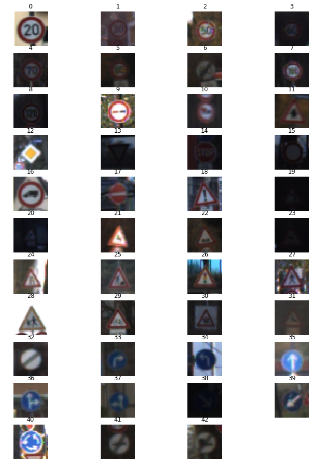
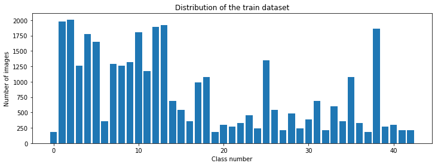
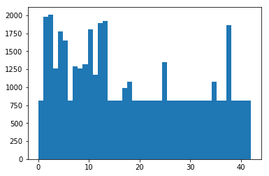
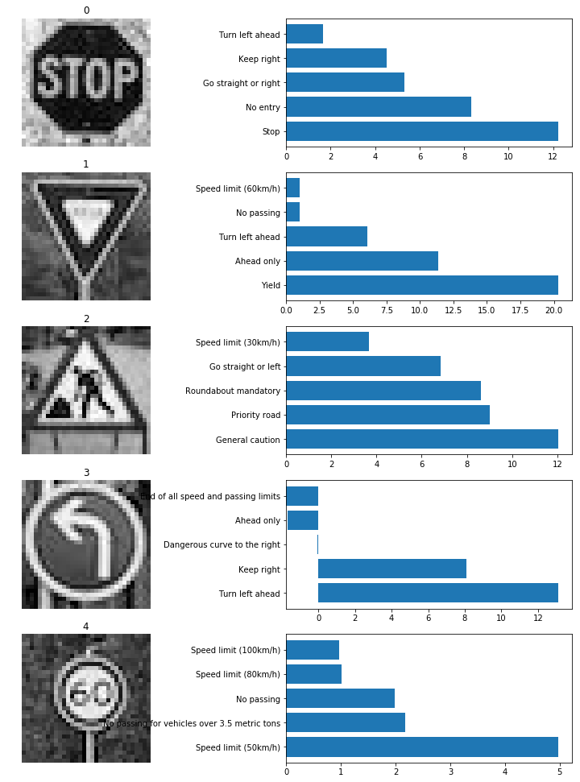
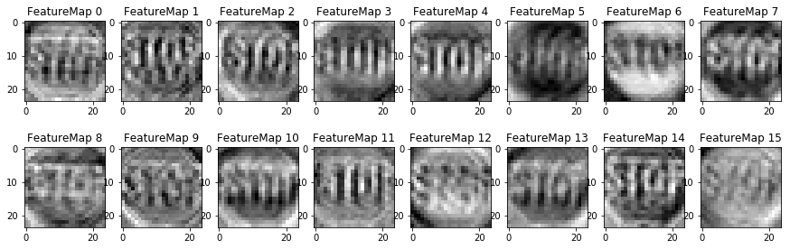

<!DOCTYPE html>
<!--[if IE 8]><html class="no-js lt-ie9" lang="en" > <![endif]-->
<!--[if gt IE 8]><!--> <html class="no-js" lang="en" > <!--<![endif]-->
<head>
  <meta charset="utf-8">
  <meta http-equiv="X-UA-Compatible" content="IE=edge">
  <meta name="viewport" content="width=device-width, initial-scale=1.0">
  
  
  <link rel="shortcut icon" href="../../../img/favicon.ico">
  <title>Traffic Sign Detection - Machine Learning</title>
  <link href='https://fonts.googleapis.com/css?family=Lato:400,700|Roboto+Slab:400,700|Inconsolata:400,700' rel='stylesheet' type='text/css'>
  <link href='https://maxcdn.bootstrapcdn.com/font-awesome/4.7.0/css/font-awesome.min.css' rel='stylesheet' type='text/css'>

  <link rel="stylesheet" href="../../../css/theme.css" type="text/css" />
  <link rel="stylesheet" href="../../../css/theme_extra.css" type="text/css" />
  <link rel="stylesheet" href="//cdnjs.cloudflare.com/ajax/libs/highlight.js/9.12.0/styles/github.min.css">
  
  <script>
    // Current page data
    var mkdocs_page_name = "Traffic Sign Detection";
    var mkdocs_page_input_path = "dl/traffic-sign/Traffic_Sign_Classifier.md";
    var mkdocs_page_url = null;
  </script>
  
  <script src="../../../js/jquery-2.1.1.min.js" defer></script>
  <script src="../../../js/modernizr-2.8.3.min.js" defer></script>
  <script src="//cdnjs.cloudflare.com/ajax/libs/highlight.js/9.12.0/highlight.min.js"></script>
  <script>hljs.initHighlightingOnLoad();</script> 
  
</head>

<body class="wy-body-for-nav" role="document">

  <div class="wy-grid-for-nav">

    
    <nav data-toggle="wy-nav-shift" class="wy-nav-side stickynav">
      <div class="wy-side-nav-search">
        <a href="../../.." class="icon icon-home"> Machine Learning</a>
        <div role="search">
  <form id ="rtd-search-form" class="wy-form" action="../../../search.html" method="get">
    <input type="text" name="q" placeholder="Search docs" title="Type search term here" />
  </form>
</div>
      </div>

      <div class="wy-menu wy-menu-vertical" data-spy="affix" role="navigation" aria-label="main navigation">
	<ul class="tocbase current">
    
    
      


  <li class="navtree toctree-l1 inactive">
    <a class="" href="../../..">Home</a>
  </li>
    
      
  <li class="navtree toctree-l1 label">
    <p class="caption">Machine Learning</p>
  </li>


  

  
    <li class="navtree toctree-l1 group">
      <ul class="navtree subnav-l1 current">
          


  <li class="navtree toctree-l2 inactive">
    <a class="" href="../../../ml/LinearModels/Linear-models/">Linear Regression</a>
  </li>
        
          


  <li class="navtree toctree-l2 inactive">
    <a class="" href="../../../ml/Classifiers/Logistic/Logistic/">Logistic Regression</a>
  </li>
        
          


  <li class="navtree toctree-l2 inactive">
    <a class="" href="../../../ml/Classifiers/Tree/Tree/">Decision Tree</a>
  </li>
        
          


  <li class="navtree toctree-l2 inactive">
    <a class="" href="../../../ml/Classifiers/Ensamble/ensamble/">Ensamble Methods</a>
  </li>
        
          


  <li class="navtree toctree-l2 inactive">
    <a class="" href="../../../ml/Classifiers/SVM/svm/">Support Vector Machine</a>
  </li>
        
          


  <li class="navtree toctree-l2 inactive">
    <a class="" href="../../../ml/Clustering/Kmeans/Kmeans/">Kmeans Clustering</a>
  </li>
        
          


  <li class="navtree toctree-l2 inactive">
    <a class="" href="../../../ml/Clustering/Agglomerative/Agglomerative/">Agglomerative Clustering</a>
  </li>
        
          


  <li class="navtree toctree-l2 inactive">
    <a class="" href="../../../ml/Clustering/AffinityPropagation/Affinity-Propagation/">Affinity Propagation</a>
  </li>
        
          


  <li class="navtree toctree-l2 inactive">
    <a class="" href="../../../ml/Clustering/Spectral/Spectral/">Spectral Clustering</a>
  </li>
        
          


  <li class="navtree toctree-l2 inactive">
    <a class="" href="../../../ml/Clustering/DBSCAN/DBSCAN/">DBSCAN Clustering</a>
  </li>
        
          


  <li class="navtree toctree-l2 inactive">
    <a class="" href="../../../ml/Clustering/MeanShift/Mean-shift/">Mean Shift Clustering</a>
  </li>
        
          


  <li class="navtree toctree-l2 inactive">
    <a class="" href="../../../ml/Clustering/Comparison/Comparison/">Cluster Comparison</a>
  </li>
        
      </ul>
    </li>
    
      
  <li class="navtree toctree-l1 label">
    <p class="caption">ML Projects</p>
  </li>


  

  
    <li class="navtree toctree-l1 group">
      <ul class="navtree subnav-l1 current">
          


  <li class="navtree toctree-l2 inactive">
    <a class="" href="../../../mlp/intro/">Introduction</a>
  </li>
        
          


  <li class="navtree toctree-l2 inactive">
    <a class="" href="../../../mlp/boston_housing/boston_housing/">Boston Housing</a>
  </li>
        
          


  <li class="navtree toctree-l2 inactive">
    <a class="" href="../../../mlp/Customer_segments/customer_segments/">Customer Clustering</a>
  </li>
        
          


  <li class="navtree toctree-l2 inactive">
    <a class="" href="../../../mlp/finding_donors/finding_donors/">Finding Donors</a>
  </li>
        
          


  <li class="navtree toctree-l2 inactive">
    <a class="" href="../../../mlp/vehicle-detection/CARND-Project-5/">Vehicle Detection</a>
  </li>
        
          


  <li class="navtree toctree-l2 inactive">
    <a class="" href="../../../mlp/perceptron/dlnd-your-first-neural-network/">Perceptron</a>
  </li>
        
      </ul>
    </li>
    
      
  <li class="navtree toctree-l1 label">
    <p class="caption">Deep Learning</p>
  </li>


  

  
    <li class="navtree toctree-l1 group">
      <ul class="navtree subnav-l1 current">
          


  <li class="navtree toctree-l2 inactive">
    <a class="" href="../../intro/">Introduction</a>
  </li>
        
          


  <li class="navtree toctree-l2 inactive">
    <a class="" href="../../Vanila/1.Vanila-LSTM/">Vanila LSTM</a>
  </li>
        
          


  <li class="navtree toctree-l2 inactive">
    <a class="" href="../../stacked/2.Stacked-LSTM/">Stacked LSTM</a>
  </li>
        
          


  <li class="navtree toctree-l2 inactive">
    <a class="" href="../../bidirectional/5. BiDirectional-LSTM/">Bidirectional LSTM</a>
  </li>
        
          


  <li class="navtree toctree-l2 inactive">
    <a class="" href="../../rnn/RNN_project/">Recurrent Neural Network</a>
  </li>
        
      </ul>
    </li>
    
      
  <li class="navtree toctree-l1 label">
    <p class="caption">DL Projects</p>
  </li>


  

  
    <li class="navtree toctree-l1 group">
      <ul class="navtree subnav-l1 current">
          


  <li class="navtree toctree-l2 inactive">
    <a class="" href="../../NMIST/NMIST/">Digit Classifier</a>
  </li>
        
          


  <li class="navtree toctree-l2 inactive">
    <a class="" href="../../CIFRT10/CIFR10/">Image Classifier</a>
  </li>
        
          


  
    
    <li class="navtree toctree-l2 page current">
      <a class="current" href="./">
        Traffic Sign Detection
          <span class="toctree-expand"></span>
      </a>
    </li>
    
      

  <li class="toctree-l2 current with-children">
    <a href="#self-driving-car-engineer-nanodegree">
      Self-Driving Car Engineer Nanodegree
      <span class="toctree-expand"></span>
    </a>
  </li>


  <li class="toctree-l2 current">
    <ul class="subnav-l2 current">
    
      
        <li class="toctree-l3">
          <a class="toctree-l4" href="#deep-learning">Deep Learning</a>
        </li>
    
      
        <li class="toctree-l3">
          <a class="toctree-l4" href="#project-build-a-traffic-sign-recognition-classifier">Project: Build a Traffic Sign Recognition Classifier</a>
        </li>
    
      
        <li class="toctree-l3">
          <a class="toctree-l4" href="#step-0-load-the-data">Step 0: Load The Data</a>
        </li>
    
      
          

  <li class="toctree-l3">
    <a href="#step-1-dataset-summary-exploration">
      Step 1: Dataset Summary &amp; Exploration
      <span class="toctree-expand"></span>
    </a>
  </li>


  <li class="toctree-l3">
    <ul class="subnav-l3 toc-hidden">
    
      
        <li class="toctree-l4">
          <a class="toctree-l5" href="#provide-a-basic-summary-of-the-data-set-using-python-numpy-andor-pandas">Provide a Basic Summary of the Data Set Using Python, Numpy and/or Pandas</a>
        </li>
    
      
          

  <li class="toctree-l4">
    <a href="#include-an-exploratory-visualization-of-the-dataset">
      Include an exploratory visualization of the dataset
      <span class="toctree-expand"></span>
    </a>
  </li>


  <li class="toctree-l4">
    <ul class="subnav-l4 toc-hidden">
    
      
        <li class="toctree-l5">
          <a class="toctree-l6" href="#plot-number-of-images-per-class">Plot number of images per class</a>
        </li>
    
    </ul>
  </li>

      
    
    </ul>
  </li>

      
    
      
          

  <li class="toctree-l3">
    <a href="#step-2-design-and-test-a-model-architecture">
      Step 2: Design and Test a Model Architecture
      <span class="toctree-expand"></span>
    </a>
  </li>


  <li class="toctree-l3">
    <ul class="subnav-l3 toc-hidden">
    
      
          

  <li class="toctree-l4 current with-children">
    <a href="#21-preprocess-the-data-set-normalization-grayscale-etc">
      2.1:  Preprocess the Data Set (normalization, grayscale, etc.)
      <span class="toctree-expand"></span>
    </a>
  </li>


  <li class="toctree-l4 current">
    <ul class="subnav-l4 current">
    
      
        <li class="toctree-l5">
          <a class="toctree-l6" href="#211-preprocessing-function">2.1.1: Preprocessing Function</a>
        </li>
    
      
        <li class="toctree-l5">
          <a class="toctree-l6" href="#212-preprocessing-all-data">2.1.2: Preprocessing all data</a>
        </li>
    
      
        <li class="toctree-l5">
          <a class="toctree-l6" href="#213-after-preprocessing">2.1.3: After Preprocessing</a>
        </li>
    
      
        <li class="toctree-l5">
          <a class="toctree-l6" href="#214-generate-fake-data">2.1.4: Generate fake data</a>
        </li>
    
      
        <li class="toctree-l5">
          <a class="toctree-l6" href="#215-histogram-representing-data-distribution-in-all-classes">2.1.5: Histogram representing data distribution in all classes</a>
        </li>
    
      
        <li class="toctree-l5">
          <a class="toctree-l6" href="#data-summary">Data summary</a>
        </li>
    
      
        <li class="toctree-l5">
          <a class="toctree-l6" href="#splitting-train-and-validation-data">Splitting Train and Validation data</a>
        </li>
    
    </ul>
  </li>

      
    
      
          

  <li class="toctree-l4">
    <a href="#22-model-architecture">
      2.2 : Model Architecture
      <span class="toctree-expand"></span>
    </a>
  </li>


  <li class="toctree-l4">
    <ul class="subnav-l4 toc-hidden">
    
      
        <li class="toctree-l5">
          <a class="toctree-l6" href="#221-neural-network-function">2.2.1: Neural Network Function</a>
        </li>
    
      
        <li class="toctree-l5">
          <a class="toctree-l6" href="#222-create-placeholders">2.2.2: Create Placeholders</a>
        </li>
    
      
        <li class="toctree-l5">
          <a class="toctree-l6" href="#223-pipeline">2.2.3: Pipeline</a>
        </li>
    
      
        <li class="toctree-l5">
          <a class="toctree-l6" href="#224-helper-functions-for-train-validate-and-test">2.2.4: Helper functions for train, validate and test</a>
        </li>
    
    </ul>
  </li>

      
    
      
          

  <li class="toctree-l4">
    <a href="#23-train-validate-and-test-the-model">
      2.3:  Train, Validate and Test the Model
      <span class="toctree-expand"></span>
    </a>
  </li>


  <li class="toctree-l4">
    <ul class="subnav-l4 toc-hidden">
    
      
        <li class="toctree-l5">
          <a class="toctree-l6" href="#launch-the-model-on-the-test-datatrain-data-and-validation-data">Launch the model on the test data,train data and validation data</a>
        </li>
    
    </ul>
  </li>

      
    
    </ul>
  </li>

      
    
      
          

  <li class="toctree-l3">
    <a href="#step-3-test-a-model-on-new-images">
      Step 3: Test a Model on New Images
      <span class="toctree-expand"></span>
    </a>
  </li>


  <li class="toctree-l3">
    <ul class="subnav-l3 toc-hidden">
    
      
        <li class="toctree-l4">
          <a class="toctree-l5" href="#31-load-and-output-the-images">3.1: Load and Output the Images</a>
        </li>
    
      
          

  <li class="toctree-l4">
    <a href="#32-predict-the-sign-type-for-each-image">
      3.2  : Predict the Sign Type for Each Image
      <span class="toctree-expand"></span>
    </a>
  </li>


  <li class="toctree-l4">
    <ul class="subnav-l4 toc-hidden">
    
      
        <li class="toctree-l5">
          <a class="toctree-l6" href="#321-preprocess-the-new-data">3.2.1: Preprocess the new data</a>
        </li>
    
      
        <li class="toctree-l5">
          <a class="toctree-l6" href="#322-double-check-that-the-image-is-changed-to-depth-of-1">3.2.2: Double-check that the image is changed to depth of 1</a>
        </li>
    
      
        <li class="toctree-l5">
          <a class="toctree-l6" href="#323-prediction-over-new-images">3.2.3:  Prediction over new images</a>
        </li>
    
    </ul>
  </li>

      
    
      
        <li class="toctree-l4">
          <a class="toctree-l5" href="#33-analyze-performance">3.3: Analyze Performance</a>
        </li>
    
      
          

  <li class="toctree-l4">
    <a href="#34-output-top-5-softmax-probabilities-for-each-image-found-on-the-web">
      3.4:  Output Top 5 Softmax Probabilities For Each Image Found on the Web
      <span class="toctree-expand"></span>
    </a>
  </li>


  <li class="toctree-l4">
    <ul class="subnav-l4 toc-hidden">
    
      
        <li class="toctree-l5">
          <a class="toctree-l6" href="#predicted-result-and-actual-picture-visualization">Predicted Result  and actual picture visualization</a>
        </li>
    
    </ul>
  </li>

      
    
    </ul>
  </li>

      
    
      
          

  <li class="toctree-l3">
    <a href="#step-4-visualize-the-neural-networks-state-with-test-images">
      Step 4: Visualize the Neural Network's State with Test Images
      <span class="toctree-expand"></span>
    </a>
  </li>


  <li class="toctree-l3">
    <ul class="subnav-l3 toc-hidden">
    
      
        <li class="toctree-l4">
          <a class="toctree-l5" href="#setting-function">Setting Function</a>
        </li>
    
      
        <li class="toctree-l4">
          <a class="toctree-l5" href="#plot-of-visual-output">Plot of visual output</a>
        </li>
    
      
        <li class="toctree-l4">
          <a class="toctree-l5" href="#question-9">Question 9</a>
        </li>
    
      
        <li class="toctree-l4">
          <a class="toctree-l5" href="#project-writeup">Project Writeup</a>
        </li>
    
    </ul>
  </li>

      
    
    </ul>
  </li>


  
        
          


  <li class="navtree toctree-l2 inactive">
    <a class="" href="../../translator/dlnd_language_translation/">Language Translator</a>
  </li>
        
      </ul>
    </li>
    
      
  <li class="navtree toctree-l1 label">
    <p class="caption">Rinforcement Learning</p>
  </li>


  

  
    <li class="navtree toctree-l1 group">
      <ul class="navtree subnav-l1 current">
          


  <li class="navtree toctree-l2 inactive">
    <a class="" href="../../../rl/smartcab/smartcab/">SmartCab</a>
  </li>
        
      </ul>
    </li>
    
      
  <li class="navtree toctree-l1 label">
    <p class="caption">GAN Project</p>
  </li>


  

  
    <li class="navtree toctree-l1 group">
      <ul class="navtree subnav-l1 current">
          


  <li class="navtree toctree-l2 inactive">
    <a class="" href="../../gan/dlnd_face_generation/">Face Generation</a>
  </li>
        
      </ul>
    </li>
    
      


  <li class="navtree toctree-l1 inactive">
    <a class="" href="../../../References/ref.md">References</a>
  </li>
    
  </ul>
      </div>
      &nbsp;
    </nav>

    <section data-toggle="wy-nav-shift" class="wy-nav-content-wrap">

      
      <nav class="wy-nav-top" role="navigation" aria-label="top navigation">
        <i data-toggle="wy-nav-top" class="fa fa-bars"></i>
        <a href="../../..">Machine Learning</a>
      </nav>

      
      <div class="wy-nav-content">
        <div class="rst-content">
          <div role="navigation" aria-label="breadcrumbs navigation">
  <ul class="wy-breadcrumbs">
    <li><a href="../../..">Docs</a> &raquo;</li>
    
      
        
          <li>DL Projects &raquo;</li>
        
      
    
    <li>Traffic Sign Detection</li>
    <li class="wy-breadcrumbs-aside">
      
    </li>
  </ul>
  <hr/>
</div>
          <div role="main">
            <div class="section">
              
                <h1 id="self-driving-car-engineer-nanodegree">Self-Driving Car Engineer Nanodegree</h1>
<h2 id="deep-learning">Deep Learning</h2>
<h2 id="project-build-a-traffic-sign-recognition-classifier">Project: Build a Traffic Sign Recognition Classifier</h2>
<p>In this notebook, a template is provided for you to implement your functionality in stages, which is required to successfully complete this project. If additional code is required that cannot be included in the notebook, be sure that the Python code is successfully imported and included in your submission if necessary. </p>
<blockquote>
<p><strong>Note</strong>: Once you have completed all of the code implementations, you need to finalize your work by exporting the iPython Notebook as an HTML document. Before exporting the notebook to html, all of the code cells need to have been run so that reviewers can see the final implementation and output. You can then export the notebook by using the menu above and navigating to  \n",
    "<strong>File -&gt; Download as -&gt; HTML (.html)</strong>. Include the finished document along with this notebook as your submission. </p>
</blockquote>
<p>In addition to implementing code, there is a writeup to complete. The writeup should be completed in a separate file, which can be either a markdown file or a pdf document. There is a <a href="https://github.com/udacity/CarND-Traffic-Sign-Classifier-Project/blob/master/writeup_template.md">write up template</a> that can be used to guide the writing process. Completing the code template and writeup template will cover all of the <a href="https://review.udacity.com/#!/rubrics/481/view">rubric points</a> for this project.</p>
<p>The <a href="https://review.udacity.com/#!/rubrics/481/view">rubric</a> contains "Stand Out Suggestions" for enhancing the project beyond the minimum requirements. The stand out suggestions are optional. If you decide to pursue the "stand out suggestions", you can include the code in this Ipython notebook and also discuss the results in the writeup file.</p>
<blockquote>
<p><strong>Note:</strong> Code and Markdown cells can be executed using the <strong>Shift + Enter</strong> keyboard shortcut. In addition, Markdown cells can be edited by typically double-clicking the cell to enter edit mode.</p>
</blockquote>
<hr />
<h2 id="step-0-load-the-data">Step 0: Load The Data</h2>
<div class="codehilite" style="background: #f0f3f3"><pre style="line-height: 125%"><span></span><span style="color: #0099FF; font-style: italic"># Load pickled data</span>
<span style="color: #006699; font-weight: bold">import</span> <span style="color: #00CCFF; font-weight: bold">pickle</span>

<span style="color: #0099FF; font-style: italic"># Importing my own choice</span>
<span style="color: #006699; font-weight: bold">import</span> <span style="color: #00CCFF; font-weight: bold">numpy</span> <span style="color: #006699; font-weight: bold">as</span> <span style="color: #00CCFF; font-weight: bold">np</span>
<span style="color: #006699; font-weight: bold">import</span> <span style="color: #00CCFF; font-weight: bold">tensorflow</span> <span style="color: #006699; font-weight: bold">as</span> <span style="color: #00CCFF; font-weight: bold">tf</span>
<span style="color: #006699; font-weight: bold">from</span> <span style="color: #00CCFF; font-weight: bold">sklearn.utils</span> <span style="color: #006699; font-weight: bold">import</span> shuffle

<span style="color: #0099FF; font-style: italic"># TODO: Fill this in based on where you saved the training and testing data</span>

training_file <span style="color: #555555">=</span> <span style="color: #CC3300">&#39;traffic-signs-data/train.p&#39;</span>
testing_file <span style="color: #555555">=</span> <span style="color: #CC3300">&#39;traffic-signs-data/test.p&#39;</span>

<span style="color: #006699; font-weight: bold">with</span> <span style="color: #336666">open</span>(training_file, mode<span style="color: #555555">=</span><span style="color: #CC3300">&#39;rb&#39;</span>) <span style="color: #006699; font-weight: bold">as</span> f:
    train <span style="color: #555555">=</span> pickle<span style="color: #555555">.</span>load(f)

<span style="color: #006699; font-weight: bold">with</span> <span style="color: #336666">open</span>(testing_file, mode<span style="color: #555555">=</span><span style="color: #CC3300">&#39;rb&#39;</span>) <span style="color: #006699; font-weight: bold">as</span> f:
    test <span style="color: #555555">=</span> pickle<span style="color: #555555">.</span>load(f)

X_train, y_train <span style="color: #555555">=</span> train[<span style="color: #CC3300">&#39;features&#39;</span>], train[<span style="color: #CC3300">&#39;labels&#39;</span>]
X_test, y_test <span style="color: #555555">=</span> test[<span style="color: #CC3300">&#39;features&#39;</span>], test[<span style="color: #CC3300">&#39;labels&#39;</span>]


<span style="color: #336666">print</span>()
<span style="color: #336666">print</span>(<span style="color: #CC3300">&quot;Image Shape: </span><span style="color: #AA0000">{}</span><span style="color: #CC3300">&quot;</span><span style="color: #555555">.</span>format(X_train[<span style="color: #FF6600">0</span>]<span style="color: #555555">.</span>shape))
<span style="color: #336666">print</span>()
<span style="color: #336666">print</span>(<span style="color: #CC3300">&quot;Training Set:   </span><span style="color: #AA0000">{}</span><span style="color: #CC3300"> samples&quot;</span><span style="color: #555555">.</span>format(<span style="color: #336666">len</span>(X_train)))
<span style="color: #336666">print</span>(<span style="color: #CC3300">&quot;Test Set:       </span><span style="color: #AA0000">{}</span><span style="color: #CC3300"> samples&quot;</span><span style="color: #555555">.</span>format(<span style="color: #336666">len</span>(X_test)))
</pre></div>


<div class="codehilite" style="background: #f0f3f3"><pre style="line-height: 125%"><span></span>Image Shape: (32, 32, 3)

Training Set:   34799 samples
Test Set:       12630 samples
</pre></div>


<hr />
<h2 id="step-1-dataset-summary-exploration">Step 1: Dataset Summary &amp; Exploration</h2>
<p>The pickled data is a dictionary with 4 key/value pairs:</p>
<ul>
<li><code>'features'</code> is a 4D array containing raw pixel data of the traffic sign images, (num examples, width, height, channels).</li>
<li><code>'labels'</code> is a 1D array containing the label/class id of the traffic sign. The file <code>signnames.csv</code> contains id -&gt; name mappings for each id.</li>
<li><code>'sizes'</code> is a list containing tuples, (width, height) representing the original width and height the image.</li>
<li><code>'coords'</code> is a list containing tuples, (x1, y1, x2, y2) representing coordinates of a bounding box around the sign in the image. <strong>THESE COORDINATES ASSUME THE ORIGINAL IMAGE. THE PICKLED DATA CONTAINS RESIZED VERSIONS (32 by 32) OF THESE IMAGES</strong></li>
</ul>
<p>Complete the basic data summary below. Use python, numpy and/or pandas methods to calculate the data summary rather than hard coding the results. For example, the <a href="http://pandas.pydata.org/pandas-docs/stable/generated/pandas.DataFrame.shape.html">pandas shape method</a> might be useful for calculating some of the summary results. </p>
<h3 id="provide-a-basic-summary-of-the-data-set-using-python-numpy-andor-pandas">Provide a Basic Summary of the Data Set Using Python, Numpy and/or Pandas</h3>
<div class="codehilite" style="background: #f0f3f3"><pre style="line-height: 125%"><span></span><span style="color: #0099FF; font-style: italic">### Replace each question mark with the appropriate value. </span>
<span style="color: #0099FF; font-style: italic">### Use python, pandas or numpy methods rather than hard coding the results</span>

<span style="color: #0099FF; font-style: italic"># TODO: Number of training examples</span>
n_train <span style="color: #555555">=</span> X_train<span style="color: #555555">.</span>shape[<span style="color: #FF6600">0</span>]

<span style="color: #0099FF; font-style: italic"># TODO: Number of testing examples.</span>
n_test <span style="color: #555555">=</span> X_test<span style="color: #555555">.</span>shape[<span style="color: #FF6600">0</span>]

<span style="color: #0099FF; font-style: italic"># TODO: What&#39;s the shape of an traffic sign image?</span>
image_shape <span style="color: #555555">=</span> (X_train<span style="color: #555555">.</span>shape[<span style="color: #FF6600">1</span>], X_train<span style="color: #555555">.</span>shape[<span style="color: #FF6600">2</span>], X_train<span style="color: #555555">.</span>shape[<span style="color: #FF6600">3</span>])

<span style="color: #0099FF; font-style: italic"># TODO: How many unique classes/labels there are in the dataset.</span>
n_classes <span style="color: #555555">=</span> y_train<span style="color: #555555">.</span>max() <span style="color: #555555">+</span> <span style="color: #FF6600">1</span>

<span style="color: #336666">print</span>(<span style="color: #CC3300">&quot;Number of training examples =&quot;</span>, n_train)
<span style="color: #336666">print</span>(<span style="color: #CC3300">&quot;Number of testing examples =&quot;</span>, n_test)
<span style="color: #336666">print</span>(<span style="color: #CC3300">&quot;Image data shape =&quot;</span>, image_shape)
<span style="color: #336666">print</span>(<span style="color: #CC3300">&quot;Number of classes =&quot;</span>, n_classes)
</pre></div>


<div class="codehilite" style="background: #f0f3f3"><pre style="line-height: 125%"><span></span>Number of training examples = 34799
Number of testing examples = 12630
Image data shape = (32, 32, 3)
Number of classes = 43
</pre></div>


<h3 id="include-an-exploratory-visualization-of-the-dataset">Include an exploratory visualization of the dataset</h3>
<p>Visualize the German Traffic Signs Dataset using the pickled file(s). This is open ended, suggestions include: plotting traffic sign images, plotting the count of each sign, etc.</p>
<p>The <a href="http://matplotlib.org/">Matplotlib</a> <a href="http://matplotlib.org/examples/index.html">examples</a> and <a href="http://matplotlib.org/gallery.html">gallery</a> pages are a great resource for doing visualizations in Python.</p>
<p><strong>NOTE:</strong> It's recommended you start with something simple first. If you wish to do more, come back to it after you've completed the rest of the sections.</p>
<div class="codehilite" style="background: #f0f3f3"><pre style="line-height: 125%"><span></span><span style="color: #0099FF; font-style: italic">### Data exploration visualization code goes here.</span>
<span style="color: #0099FF; font-style: italic">### Feel free to use as many code cells as needed.</span>
<span style="color: #006699; font-weight: bold">import</span> <span style="color: #00CCFF; font-weight: bold">matplotlib.pyplot</span> <span style="color: #006699; font-weight: bold">as</span> <span style="color: #00CCFF; font-weight: bold">plt</span>
<span style="color: #006699; font-weight: bold">from</span> <span style="color: #00CCFF; font-weight: bold">random</span> <span style="color: #006699; font-weight: bold">import</span> randint
<span style="color: #0099FF; font-style: italic"># Visualizations will be shown in the notebook.</span>
<span style="color: #555555">%</span>matplotlib inline

num_of_samples<span style="color: #555555">=</span>[]
plt<span style="color: #555555">.</span>figure(figsize<span style="color: #555555">=</span>(<span style="color: #FF6600">12</span>, <span style="color: #FF6600">16.5</span>))
<span style="color: #006699; font-weight: bold">for</span> i <span style="color: #000000; font-weight: bold">in</span> <span style="color: #336666">range</span>(<span style="color: #FF6600">0</span>, n_classes):
    plt<span style="color: #555555">.</span>subplot(<span style="color: #FF6600">11</span>, <span style="color: #FF6600">4</span>, i<span style="color: #555555">+</span><span style="color: #FF6600">1</span>)
    x_selected <span style="color: #555555">=</span> X_train[y_train <span style="color: #555555">==</span> i]
    plt<span style="color: #555555">.</span>imshow(x_selected[<span style="color: #FF6600">0</span>, :, :, :]) <span style="color: #0099FF; font-style: italic">#draw the first image of each class</span>
    plt<span style="color: #555555">.</span>title(i)
    plt<span style="color: #555555">.</span>axis(<span style="color: #CC3300">&#39;off&#39;</span>)
    num_of_samples<span style="color: #555555">.</span>append(<span style="color: #336666">len</span>(x_selected))
plt<span style="color: #555555">.</span>show()
</pre></div>


<p></p>
<h4 id="plot-number-of-images-per-class">Plot number of images per class</h4>
<div class="codehilite" style="background: #f0f3f3"><pre style="line-height: 125%"><span></span><span style="color: #0099FF; font-style: italic">### Data exploration visualization code goes here.</span>
<span style="color: #0099FF; font-style: italic">### Feel free to use as many code cells as needed.</span>
<span style="color: #006699; font-weight: bold">import</span> <span style="color: #00CCFF; font-weight: bold">matplotlib.pyplot</span> <span style="color: #006699; font-weight: bold">as</span> <span style="color: #00CCFF; font-weight: bold">plt</span>
<span style="color: #006699; font-weight: bold">from</span> <span style="color: #00CCFF; font-weight: bold">random</span> <span style="color: #006699; font-weight: bold">import</span> randint

<span style="color: #555555">%</span>matplotlib inline
<span style="color: #0099FF; font-style: italic">#Plot number of images per class</span>
plt<span style="color: #555555">.</span>figure(figsize<span style="color: #555555">=</span>(<span style="color: #FF6600">12</span>, <span style="color: #FF6600">4</span>))
plt<span style="color: #555555">.</span>bar(<span style="color: #336666">range</span>(<span style="color: #FF6600">0</span>, n_classes), num_of_samples)
plt<span style="color: #555555">.</span>title(<span style="color: #CC3300">&quot;Distribution of the train dataset&quot;</span>)
plt<span style="color: #555555">.</span>xlabel(<span style="color: #CC3300">&quot;Class number&quot;</span>)
plt<span style="color: #555555">.</span>ylabel(<span style="color: #CC3300">&quot;Number of images&quot;</span>)
plt<span style="color: #555555">.</span>show()

<span style="color: #336666">print</span>(<span style="color: #CC3300">&quot;Min number of images per class =&quot;</span>, <span style="color: #336666">min</span>(num_of_samples))
<span style="color: #336666">print</span>(<span style="color: #CC3300">&quot;Max number of images per class =&quot;</span>, <span style="color: #336666">max</span>(num_of_samples))
</pre></div>


<p></p>
<div class="codehilite" style="background: #f0f3f3"><pre style="line-height: 125%"><span></span>Min number of images per class = 180
Max number of images per class = 2010
</pre></div>


<hr />
<hr />
<h2 id="step-2-design-and-test-a-model-architecture">Step 2: Design and Test a Model Architecture</h2>
<p>Design and implement a deep learning model that learns to recognize traffic signs. Train and test your model on the <a href="http://benchmark.ini.rub.de/?section=gtsrb&amp;subsection=dataset">German Traffic Sign Dataset</a>.</p>
<p>The LeNet-5 implementation shown in the <a href="https://classroom.udacity.com/nanodegrees/nd013/parts/fbf77062-5703-404e-b60c-95b78b2f3f9e/modules/6df7ae49-c61c-4bb2-a23e-6527e69209ec/lessons/601ae704-1035-4287-8b11-e2c2716217ad/concepts/d4aca031-508f-4e0b-b493-e7b706120f81">classroom</a> at the end of the CNN lesson is a solid starting point. You'll have to change the number of classes and possibly the preprocessing, but aside from that it's plug and play! </p>
<p>With the LeNet-5 solution from the lecture, you should expect a validation set accuracy of about 0.89. To meet specifications, the validation set accuracy will need to be at least 0.93. It is possible to get an even higher accuracy, but 0.93 is the minimum for a successful project submission. </p>
<p>There are various aspects to consider when thinking about this problem:</p>
<ul>
<li>Neural network architecture (is the network over or underfitting?)</li>
<li>Play around preprocessing techniques (normalization, rgb to grayscale, etc)</li>
<li>Number of examples per label (some have more than others).</li>
<li>Generate fake data.</li>
</ul>
<p>Here is an example of a <a href="http://yann.lecun.com/exdb/publis/pdf/sermanet-ijcnn-11.pdf">published baseline model on this problem</a>. It's not required to be familiar with the approach used in the paper but, it's good practice to try to read papers like these.</p>
<h3 id="21-preprocess-the-data-set-normalization-grayscale-etc">2.1:  Preprocess the Data Set (normalization, grayscale, etc.)</h3>
<p>Use the code cell (or multiple code cells, if necessary) to implement the first step of your project.</p>
<h4 id="211-preprocessing-function">2.1.1: Preprocessing Function</h4>
<div class="codehilite" style="background: #f0f3f3"><pre style="line-height: 125%"><span></span><span style="color: #0099FF; font-style: italic">### Preprocess the data here. Preprocessing steps could include normalization, converting to grayscale, etc.</span>
<span style="color: #0099FF; font-style: italic">### Feel free to use as many code cells as needed.</span>


<span style="color: #006699; font-weight: bold">import</span> <span style="color: #00CCFF; font-weight: bold">cv2</span>
<span style="color: #006699; font-weight: bold">from</span> <span style="color: #00CCFF; font-weight: bold">numpy</span> <span style="color: #006699; font-weight: bold">import</span> newaxis


<span style="color: #0099FF; font-style: italic"># Iterates through grayscale for each image in the data</span>
<span style="color: #006699; font-weight: bold">def</span> <span style="color: #CC00FF">gray_maker</span>(data):
    gray_images <span style="color: #555555">=</span> []
    <span style="color: #006699; font-weight: bold">for</span> image <span style="color: #000000; font-weight: bold">in</span> data:
        gray <span style="color: #555555">=</span> cv2<span style="color: #555555">.</span>cvtColor(image, cv2<span style="color: #555555">.</span>COLOR_BGR2GRAY)
        gray_images<span style="color: #555555">.</span>append(gray)
    <span style="color: #006699; font-weight: bold">return</span> np<span style="color: #555555">.</span>array(gray_images)


<span style="color: #006699; font-weight: bold">def</span> <span style="color: #CC00FF">preprocess</span>(data,data_name,verbose):
    <span style="color: #006699; font-weight: bold">if</span> verbose:
        <span style="color: #336666">print</span>(<span style="color: #CC3300">&#39;Preprocessing &#39;</span><span style="color: #555555">+</span> data_name <span style="color: #555555">+</span> <span style="color: #CC3300">&#39;...&#39;</span>)

    <span style="color: #0099FF; font-style: italic"># Iterate through grayscale</span>
    data <span style="color: #555555">=</span> gray_maker(data)
    data <span style="color: #555555">=</span> data[<span style="color: #555555">...</span>, newaxis]

    <span style="color: #0099FF; font-style: italic">#Normalizes the data between 0.1 and 0.9 instead of 0 to 255 </span>
    data <span style="color: #555555">=</span> data <span style="color: #555555">/</span> <span style="color: #FF6600">255</span> <span style="color: #555555">*</span> <span style="color: #FF6600">0.8</span> <span style="color: #555555">+</span> <span style="color: #FF6600">0.1</span>

    <span style="color: #006699; font-weight: bold">if</span> verbose:
        <span style="color: #336666">print</span>(<span style="color: #CC3300">&#39;Finished preprocessing &#39;</span><span style="color: #555555">+</span> data_name <span style="color: #555555">+</span> <span style="color: #CC3300">&#39;...&#39;</span>)

    <span style="color: #0099FF; font-style: italic"># Double-check that the image is changed to depth of 1</span>
    image_shape <span style="color: #555555">=</span> data<span style="color: #555555">.</span>shape

    <span style="color: #006699; font-weight: bold">if</span> verbose:
        <span style="color: #336666">print</span>(<span style="color: #CC3300">&#39;Processed &#39;</span><span style="color: #555555">+</span> data_name <span style="color: #555555">+</span> <span style="color: #CC3300">&#39; shape =&#39;</span>, image_shape)
        <span style="color: #336666">print</span>(<span style="color: #CC3300">&quot; &quot;</span>)
    <span style="color: #006699; font-weight: bold">return</span> data
</pre></div>


<h4 id="212-preprocessing-all-data">2.1.2: Preprocessing all data</h4>
<div class="codehilite" style="background: #f0f3f3"><pre style="line-height: 125%"><span></span>X_train <span style="color: #555555">=</span> preprocess(X_train,<span style="color: #CC3300">&#39;train_data&#39;</span>,verbose <span style="color: #555555">=</span> <span style="color: #006699; font-weight: bold">True</span>)
X_test <span style="color: #555555">=</span> preprocess(X_test,<span style="color: #CC3300">&#39;test_data&#39;</span>,verbose <span style="color: #555555">=</span> <span style="color: #006699; font-weight: bold">True</span>)
</pre></div>


<div class="codehilite" style="background: #f0f3f3"><pre style="line-height: 125%"><span></span>Preprocessing train_data...
Finished preprocessing train_data...
Processed train_data shape = (34799, 32, 32, 1)

Preprocessing test_data...
Finished preprocessing test_data...
Processed test_data shape = (12630, 32, 32, 1)
</pre></div>


<h4 id="213-after-preprocessing">2.1.3: After Preprocessing</h4>
<div class="codehilite" style="background: #f0f3f3"><pre style="line-height: 125%"><span></span><span style="color: #0099FF; font-style: italic"># Visualizations will be shown in the notebook.</span>
<span style="color: #555555">%</span>matplotlib inline

num_of_samples<span style="color: #555555">=</span>[]
plt<span style="color: #555555">.</span>figure(figsize<span style="color: #555555">=</span>(<span style="color: #FF6600">12</span>, <span style="color: #FF6600">16.5</span>))
<span style="color: #006699; font-weight: bold">for</span> i <span style="color: #000000; font-weight: bold">in</span> <span style="color: #336666">range</span>(<span style="color: #FF6600">0</span>, n_classes):
    plt<span style="color: #555555">.</span>subplot(<span style="color: #FF6600">11</span>, <span style="color: #FF6600">4</span>, i<span style="color: #555555">+</span><span style="color: #FF6600">1</span>)
    x_selected_grey <span style="color: #555555">=</span> X_train[y_train <span style="color: #555555">==</span> i]
    <span style="color: #0099FF; font-style: italic">#draw the first image of each class</span>
    plt<span style="color: #555555">.</span>imshow(x_selected_grey[<span style="color: #FF6600">0</span>, :, :, <span style="color: #FF6600">0</span>], cmap <span style="color: #555555">=</span> <span style="color: #CC3300">&#39;gray&#39;</span>) 
    plt<span style="color: #555555">.</span>title(i)
    plt<span style="color: #555555">.</span>axis(<span style="color: #CC3300">&#39;off&#39;</span>)
    num_of_samples<span style="color: #555555">.</span>append(<span style="color: #336666">len</span>(x_selected))
plt<span style="color: #555555">.</span>show()
</pre></div>


<p></p>
<hr />
<h4 id="214-generate-fake-data">2.1.4: Generate fake data</h4>
<p>I will generate some additional data, then split the data in a later cell. This is to help with the issue identified in the original histogram</p>
<div class="codehilite" style="background: #f0f3f3"><pre style="line-height: 125%"><span></span><span style="color: #0099FF; font-style: italic">### Generate fake data </span>
<span style="color: #006699; font-weight: bold">from</span> <span style="color: #00CCFF; font-weight: bold">scipy</span> <span style="color: #006699; font-weight: bold">import</span> ndimage
<span style="color: #006699; font-weight: bold">import</span> <span style="color: #00CCFF; font-weight: bold">random</span>

<span style="color: #0099FF; font-style: italic"># min_desired below is just mean_pics but wanted to </span>
<span style="color: #0099FF; font-style: italic"># make the code below easier to distinguish</span>

<span style="color: #006699; font-weight: bold">def</span> <span style="color: #CC00FF">fake_data_generator</span>(X,y,verbose):

    <span style="color: #CC3300; font-style: italic">&#39;&#39;&#39;X = feature data , y = label data&#39;&#39;&#39;</span>

    pics_per_class <span style="color: #555555">=</span> np<span style="color: #555555">.</span>bincount(y)
    mean_pics <span style="color: #555555">=</span> <span style="color: #336666">int</span>(np<span style="color: #555555">.</span>mean(pics_per_class))

    <span style="color: #006699; font-weight: bold">if</span> verbose:
        <span style="color: #336666">print</span>(<span style="color: #CC3300">&#39;Generating new data.&#39;</span>)

    <span style="color: #0099FF; font-style: italic"># Angles to be used to rotate images in additional data made</span>
    angles <span style="color: #555555">=</span> [<span style="color: #555555">-</span><span style="color: #FF6600">10</span>, <span style="color: #FF6600">10</span>, <span style="color: #555555">-</span><span style="color: #FF6600">15</span>, <span style="color: #FF6600">15</span>, <span style="color: #555555">-</span><span style="color: #FF6600">20</span>, <span style="color: #FF6600">20</span>]

    <span style="color: #0099FF; font-style: italic"># Iterate through each class</span>
    <span style="color: #006699; font-weight: bold">for</span> i <span style="color: #000000; font-weight: bold">in</span> <span style="color: #336666">range</span>(<span style="color: #336666">len</span>(pics_per_class)):

        <span style="color: #0099FF; font-style: italic"># Check if less data than the mean</span>
        <span style="color: #006699; font-weight: bold">if</span> pics_per_class[i] <span style="color: #555555">&lt;</span> mean_pics:

            <span style="color: #0099FF; font-style: italic"># Count how many additional pictures we want</span>
            new_wanted <span style="color: #555555">=</span> mean_pics <span style="color: #555555">-</span> pics_per_class[i]
            picture <span style="color: #555555">=</span> np<span style="color: #555555">.</span>where(y <span style="color: #555555">==</span> i)
            more_X <span style="color: #555555">=</span> []
            more_y <span style="color: #555555">=</span> []

            <span style="color: #0099FF; font-style: italic"># Make the number of additional pictures needed to arrive at the mean</span>
            <span style="color: #006699; font-weight: bold">for</span> num <span style="color: #000000; font-weight: bold">in</span> <span style="color: #336666">range</span>(new_wanted):

                <span style="color: #0099FF; font-style: italic"># Rotate images and append new ones to more_X, append the class to more_y</span>
                more_X<span style="color: #555555">.</span>append(ndimage<span style="color: #555555">.</span>rotate(X[picture][random<span style="color: #555555">.</span>randint(<span style="color: #FF6600">0</span>,pics_per_class[i] <span style="color: #555555">-</span> <span style="color: #FF6600">1</span>)],\
                                         random<span style="color: #555555">.</span>choice(angles), reshape<span style="color: #555555">=</span><span style="color: #006699; font-weight: bold">False</span>))
                more_y<span style="color: #555555">.</span>append(i)

            <span style="color: #0099FF; font-style: italic"># Append the pictures generated for each class back to the original data</span>
            X <span style="color: #555555">=</span> np<span style="color: #555555">.</span>append(X, np<span style="color: #555555">.</span>array(more_X), axis<span style="color: #555555">=</span><span style="color: #FF6600">0</span>)
            y <span style="color: #555555">=</span> np<span style="color: #555555">.</span>append(y, np<span style="color: #555555">.</span>array(more_y), axis<span style="color: #555555">=</span><span style="color: #FF6600">0</span>)

    <span style="color: #006699; font-weight: bold">if</span> verbose:    
        <span style="color: #336666">print</span>(<span style="color: #CC3300">&#39;Additional data generated. Any classes lacking data now have&#39;</span>,mean_pics, <span style="color: #CC3300">&#39;pictures.&#39;</span>)
    <span style="color: #006699; font-weight: bold">return</span> X,y
</pre></div>


<div class="codehilite" style="background: #f0f3f3"><pre style="line-height: 125%"><span></span>X_train, y_train <span style="color: #555555">=</span> fake_data_generator(X_train,y_train,verbose <span style="color: #555555">=</span> <span style="color: #006699; font-weight: bold">True</span>)
</pre></div>


<div class="codehilite" style="background: #f0f3f3"><pre style="line-height: 125%"><span></span>Generating new data.
Additional data generated. Any classes lacking data now have 809 pictures.
</pre></div>


<h4 id="215-histogram-representing-data-distribution-in-all-classes">2.1.5: Histogram representing data distribution in all classes</h4>
<div class="codehilite" style="background: #f0f3f3"><pre style="line-height: 125%"><span></span>plt<span style="color: #555555">.</span>hist(y_train, bins <span style="color: #555555">=</span> n_classes)
updated_n_train <span style="color: #555555">=</span> <span style="color: #336666">len</span>(X_train)
<span style="color: #336666">print</span>(<span style="color: #CC3300">&quot;The updated number of training examples =&quot;</span>, updated_n_train)
</pre></div>


<div class="codehilite" style="background: #f0f3f3"><pre style="line-height: 125%"><span></span>The updated number of training examples = 46714
</pre></div>


<p></p>
<h4 id="data-summary">Data summary</h4>
<div class="codehilite" style="background: #f0f3f3"><pre style="line-height: 125%"><span></span>n_train <span style="color: #555555">=</span> X_train<span style="color: #555555">.</span>shape[<span style="color: #FF6600">0</span>]
n_test <span style="color: #555555">=</span> X_test<span style="color: #555555">.</span>shape[<span style="color: #FF6600">0</span>]
<span style="color: #336666">print</span>(<span style="color: #CC3300">&quot;Number of training examples =&quot;</span>, n_train)
<span style="color: #336666">print</span>(<span style="color: #CC3300">&quot;Number of testing examples =&quot;</span>, n_test)
<span style="color: #336666">print</span>(<span style="color: #CC3300">&quot;Extra data generated =&quot;</span>,n_train<span style="color: #555555">-</span><span style="color: #FF6600">34799</span>)
</pre></div>


<div class="codehilite" style="background: #f0f3f3"><pre style="line-height: 125%"><span></span>Number of training examples = 46714
Number of testing examples = 12630
Extra data generated = 11915
</pre></div>


<h4 id="splitting-train-and-validation-data">Splitting Train and Validation data</h4>
<div class="codehilite" style="background: #f0f3f3"><pre style="line-height: 125%"><span></span><span style="color: #006699; font-weight: bold">from</span> <span style="color: #00CCFF; font-weight: bold">sklearn.model_selection</span> <span style="color: #006699; font-weight: bold">import</span> train_test_split
<span style="color: #0099FF; font-style: italic"># shuffleing data</span>
X_train, y_train <span style="color: #555555">=</span> shuffle(X_train, y_train)

<span style="color: #0099FF; font-style: italic"># For each epoch, there are separate training data and validation data</span>
X_train, X_valid, y_train, y_valid\
                        <span style="color: #555555">=</span> train_test_split(X_train, y_train,\
                                    stratify <span style="color: #555555">=</span> y_train,\
                                    test_size<span style="color: #555555">=</span><span style="color: #FF6600">0.1</span>,\
                                    random_state<span style="color: #555555">=</span><span style="color: #FF6600">23</span>)

n_train <span style="color: #555555">=</span> X_train<span style="color: #555555">.</span>shape[<span style="color: #FF6600">0</span>]
n_valid <span style="color: #555555">=</span> X_valid<span style="color: #555555">.</span>shape[<span style="color: #FF6600">0</span>]
<span style="color: #336666">print</span>(<span style="color: #CC3300">&quot;Number of training examples =&quot;</span>, n_train)
<span style="color: #336666">print</span>(<span style="color: #CC3300">&quot;Number of validation examples =&quot;</span>, n_valid)
</pre></div>


<div class="codehilite" style="background: #f0f3f3"><pre style="line-height: 125%"><span></span>Number of training examples = 42042
Number of validation examples = 4672
</pre></div>


<hr />
<h3 id="22-model-architecture">2.2 : Model Architecture</h3>
<h4 id="221-neural-network-function">2.2.1: Neural Network Function</h4>
<div class="codehilite" style="background: #f0f3f3"><pre style="line-height: 125%"><span></span><span style="color: #0099FF; font-style: italic">### Define your architecture here.</span>
<span style="color: #0099FF; font-style: italic">### Feel free to use as many code cells as needed.</span>


<span style="color: #0099FF; font-style: italic"># The below is only necessary to reset if the notebook has not been shutdown</span>
tf<span style="color: #555555">.</span>reset_default_graph()

<span style="color: #006699; font-weight: bold">from</span> <span style="color: #00CCFF; font-weight: bold">tensorflow.contrib.layers</span> <span style="color: #006699; font-weight: bold">import</span> flatten

<span style="color: #006699; font-weight: bold">def</span> <span style="color: #CC00FF">neuralNetwork</span>(x): 

    <span style="color: #0099FF; font-style: italic"># Hyperparameters</span>
    mu <span style="color: #555555">=</span> <span style="color: #FF6600">0</span>
    sigma <span style="color: #555555">=</span> <span style="color: #FF6600">0.1</span>


    <span style="color: #0099FF; font-style: italic">#==============================================================</span>
    <span style="color: #0099FF; font-style: italic"># Layer 1: Convolutional. Input = 32x32x1. Output = 28x28x6.</span>
    <span style="color: #0099FF; font-style: italic"># Weight and bias</span>
    <span style="color: #0099FF; font-style: italic"># If not using grayscale, the third number in shape would be 3</span>
    c1_weight <span style="color: #555555">=</span> tf<span style="color: #555555">.</span>Variable(tf<span style="color: #555555">.</span>truncated_normal(shape <span style="color: #555555">=</span> (<span style="color: #FF6600">5</span>, <span style="color: #FF6600">5</span>, <span style="color: #FF6600">1</span>, <span style="color: #FF6600">6</span>),\
                                                mean <span style="color: #555555">=</span> mu,\
                                                stddev <span style="color: #555555">=</span> sigma))
    c1_bias <span style="color: #555555">=</span> tf<span style="color: #555555">.</span>Variable(tf<span style="color: #555555">.</span>zeros(<span style="color: #FF6600">6</span>))
    <span style="color: #0099FF; font-style: italic"># Apply convolution</span>
    conv_layer1 <span style="color: #555555">=</span> tf<span style="color: #555555">.</span>nn<span style="color: #555555">.</span>conv2d(x, c1_weight,\
                               strides<span style="color: #555555">=</span>[<span style="color: #FF6600">1</span>, <span style="color: #FF6600">1</span>, <span style="color: #FF6600">1</span>, <span style="color: #FF6600">1</span>],\
                               padding<span style="color: #555555">=</span><span style="color: #CC3300">&#39;VALID&#39;</span>)\
                               <span style="color: #555555">+</span> c1_bias
    <span style="color: #0099FF; font-style: italic"># Activation for layer 1</span>
    conv_layer1 <span style="color: #555555">=</span> tf<span style="color: #555555">.</span>nn<span style="color: #555555">.</span>relu(conv_layer1)
    <span style="color: #0099FF; font-style: italic"># Pooling. Input = 28x28x6. Output = 14x14x6.</span>
    conv_layer1 <span style="color: #555555">=</span> tf<span style="color: #555555">.</span>nn<span style="color: #555555">.</span>avg_pool(conv_layer1,\
                                 ksize<span style="color: #555555">=</span>[<span style="color: #FF6600">1</span>, <span style="color: #FF6600">2</span>, <span style="color: #FF6600">2</span>, <span style="color: #FF6600">1</span>],\
                                 strides<span style="color: #555555">=</span>[<span style="color: #FF6600">1</span>, <span style="color: #FF6600">2</span>, <span style="color: #FF6600">2</span>, <span style="color: #FF6600">1</span>],\
                                 padding<span style="color: #555555">=</span><span style="color: #CC3300">&#39;VALID&#39;</span>)


    <span style="color: #0099FF; font-style: italic">#================================================================</span>
    <span style="color: #0099FF; font-style: italic"># Layer 2: Convolutional. Output = 10x10x16.</span>
    <span style="color: #0099FF; font-style: italic"># Note: The second layer is implemented the exact same as layer one, </span>
    <span style="color: #0099FF; font-style: italic"># with layer 1 as input instead of x And then of course changing the</span>
    <span style="color: #0099FF; font-style: italic">#numbers to fit the desired ouput of 10x10x16 Weight and bias</span>
    c2_weight <span style="color: #555555">=</span> tf<span style="color: #555555">.</span>Variable(tf<span style="color: #555555">.</span>truncated_normal(shape <span style="color: #555555">=</span> (<span style="color: #FF6600">5</span>, <span style="color: #FF6600">5</span>, <span style="color: #FF6600">6</span>, <span style="color: #FF6600">16</span>),\
                                                mean <span style="color: #555555">=</span> mu,\
                                                stddev <span style="color: #555555">=</span> sigma))
    c2_bias <span style="color: #555555">=</span> tf<span style="color: #555555">.</span>Variable(tf<span style="color: #555555">.</span>zeros(<span style="color: #FF6600">16</span>))
    <span style="color: #0099FF; font-style: italic"># Apply convolution for layer 2</span>
    conv_layer2 <span style="color: #555555">=</span> tf<span style="color: #555555">.</span>nn<span style="color: #555555">.</span>conv2d(conv_layer1, c2_weight,\
                               strides<span style="color: #555555">=</span>[<span style="color: #FF6600">1</span>, <span style="color: #FF6600">1</span>, <span style="color: #FF6600">1</span>, <span style="color: #FF6600">1</span>],\
                               padding<span style="color: #555555">=</span><span style="color: #CC3300">&#39;VALID&#39;</span>) <span style="color: #555555">+</span> c2_bias
    <span style="color: #0099FF; font-style: italic"># Activation for layer 2</span>
    conv_layer2 <span style="color: #555555">=</span> tf<span style="color: #555555">.</span>nn<span style="color: #555555">.</span>relu(conv_layer2)
    <span style="color: #0099FF; font-style: italic"># Pooling. Input = 10x10x16. Output = 5x5x16.</span>
    conv_layer2 <span style="color: #555555">=</span> tf<span style="color: #555555">.</span>nn<span style="color: #555555">.</span>avg_pool(conv_layer2,\
                                 ksize<span style="color: #555555">=</span>[<span style="color: #FF6600">1</span>, <span style="color: #FF6600">2</span>, <span style="color: #FF6600">2</span>, <span style="color: #FF6600">1</span>],\
                                 strides<span style="color: #555555">=</span>[<span style="color: #FF6600">1</span>, <span style="color: #FF6600">2</span>, <span style="color: #FF6600">2</span>, <span style="color: #FF6600">1</span>],\
                                 padding<span style="color: #555555">=</span><span style="color: #CC3300">&#39;VALID&#39;</span>)
    <span style="color: #0099FF; font-style: italic"># Flatten to get to fully connected layers. Input = 5x5x16. Output = 400.</span>
    flat <span style="color: #555555">=</span> tf<span style="color: #555555">.</span>contrib<span style="color: #555555">.</span>layers<span style="color: #555555">.</span>flatten(conv_layer2)


    <span style="color: #0099FF; font-style: italic">#===============================================================</span>
    <span style="color: #0099FF; font-style: italic"># Layer 3: Fully Connected. Input = 400. Output = 120.</span>
    <span style="color: #0099FF; font-style: italic"># Although this is fully connected, the weights and biases still are implemented similarly</span>
    <span style="color: #0099FF; font-style: italic"># There is no filter this time, so shape only takes input and output</span>
    <span style="color: #0099FF; font-style: italic"># Weight and bias</span>
    fc1_weight <span style="color: #555555">=</span> tf<span style="color: #555555">.</span>Variable(tf<span style="color: #555555">.</span>truncated_normal(shape <span style="color: #555555">=</span> (<span style="color: #FF6600">400</span>, <span style="color: #FF6600">200</span>),\
                                                 mean <span style="color: #555555">=</span> mu,\
                                                 stddev <span style="color: #555555">=</span> sigma))
    fc1_bias <span style="color: #555555">=</span> tf<span style="color: #555555">.</span>Variable(tf<span style="color: #555555">.</span>zeros(<span style="color: #FF6600">200</span>))
    <span style="color: #0099FF; font-style: italic"># Here is the main change versus a convolutional layer - matrix multiplication instead of 2D convolution</span>
    fc1 <span style="color: #555555">=</span> tf<span style="color: #555555">.</span>matmul(flat, fc1_weight) <span style="color: #555555">+</span> fc1_bias
    <span style="color: #0099FF; font-style: italic"># Activation for the first fully connected layer.</span>
    <span style="color: #0099FF; font-style: italic"># Same thing as before</span>
    fc1 <span style="color: #555555">=</span> tf<span style="color: #555555">.</span>nn<span style="color: #555555">.</span>relu(fc1)
    <span style="color: #0099FF; font-style: italic"># Dropout, to prevent overfitting</span>
    fc1 <span style="color: #555555">=</span> tf<span style="color: #555555">.</span>nn<span style="color: #555555">.</span>dropout(fc1, keep_prob)


    <span style="color: #0099FF; font-style: italic">#==================================================================</span>
    <span style="color: #0099FF; font-style: italic"># Layer 4: Fully Connected. Input = 120. Output = 84.</span>
    <span style="color: #0099FF; font-style: italic"># Same as the fc1 layer, just with updated output numbers</span>
    fc2_weight <span style="color: #555555">=</span> tf<span style="color: #555555">.</span>Variable(tf<span style="color: #555555">.</span>truncated_normal(shape <span style="color: #555555">=</span> (<span style="color: #FF6600">200</span>, <span style="color: #FF6600">100</span>),\
                                                 mean <span style="color: #555555">=</span> mu,\
                                                 stddev <span style="color: #555555">=</span> sigma))
    fc2_bias <span style="color: #555555">=</span> tf<span style="color: #555555">.</span>Variable(tf<span style="color: #555555">.</span>zeros(<span style="color: #FF6600">100</span>))
    <span style="color: #0099FF; font-style: italic"># Again, matrix multiplication</span>
    fc2 <span style="color: #555555">=</span> tf<span style="color: #555555">.</span>matmul(fc1, fc2_weight) <span style="color: #555555">+</span> fc2_bias
    <span style="color: #0099FF; font-style: italic"># Activation.</span>
    fc2 <span style="color: #555555">=</span> tf<span style="color: #555555">.</span>nn<span style="color: #555555">.</span>relu(fc2)
    <span style="color: #0099FF; font-style: italic"># Dropout</span>
    fc2 <span style="color: #555555">=</span> tf<span style="color: #555555">.</span>nn<span style="color: #555555">.</span>dropout(fc2, keep_prob)


    <span style="color: #0099FF; font-style: italic">#========================================================</span>
    <span style="color: #0099FF; font-style: italic"># Layer 5 Fully Connected. Input = 84. Output = 43.</span>
    <span style="color: #0099FF; font-style: italic"># Since this is the final layer, output needs to match up with the number of classes</span>
    fc3_weight <span style="color: #555555">=</span> tf<span style="color: #555555">.</span>Variable(tf<span style="color: #555555">.</span>truncated_normal(shape <span style="color: #555555">=</span> (<span style="color: #FF6600">100</span>, <span style="color: #FF6600">43</span>),\
                                                 mean <span style="color: #555555">=</span> mu, \
                                                 stddev <span style="color: #555555">=</span> sigma))
    fc3_bias <span style="color: #555555">=</span> tf<span style="color: #555555">.</span>Variable(tf<span style="color: #555555">.</span>zeros(<span style="color: #FF6600">43</span>))
    <span style="color: #0099FF; font-style: italic"># Again, matrix multiplication</span>
    logits <span style="color: #555555">=</span> tf<span style="color: #555555">.</span>matmul(fc2, fc3_weight) <span style="color: #555555">+</span> fc3_bias

    <span style="color: #006699; font-weight: bold">return</span> logits
</pre></div>


<h4 id="222-create-placeholders">2.2.2: Create Placeholders</h4>
<div class="codehilite" style="background: #f0f3f3"><pre style="line-height: 125%"><span></span><span style="color: #0099FF; font-style: italic"># Set placeholder variables for x, y, and the keep_prob for dropout</span>
<span style="color: #0099FF; font-style: italic"># Also, one-hot encode y</span>
x <span style="color: #555555">=</span> tf<span style="color: #555555">.</span>placeholder(tf<span style="color: #555555">.</span>float32, (<span style="color: #006699; font-weight: bold">None</span>, <span style="color: #FF6600">32</span>, <span style="color: #FF6600">32</span>, <span style="color: #FF6600">1</span>))
y <span style="color: #555555">=</span> tf<span style="color: #555555">.</span>placeholder(tf<span style="color: #555555">.</span>int32, (<span style="color: #006699; font-weight: bold">None</span>))
keep_prob <span style="color: #555555">=</span> tf<span style="color: #555555">.</span>placeholder(tf<span style="color: #555555">.</span>float32)
one_hot_y <span style="color: #555555">=</span> tf<span style="color: #555555">.</span>one_hot(y, <span style="color: #FF6600">43</span>)
</pre></div>


<h4 id="223-pipeline">2.2.3: Pipeline</h4>
<div class="codehilite" style="background: #f0f3f3"><pre style="line-height: 125%"><span></span>rate <span style="color: #555555">=</span> <span style="color: #FF6600">0.001</span>

<span style="color: #0099FF; font-style: italic"># loss functions, and optimizer</span>
logits <span style="color: #555555">=</span> neuralNetwork(x)
cross_entropy <span style="color: #555555">=</span> tf<span style="color: #555555">.</span>nn<span style="color: #555555">.</span>softmax_cross_entropy_with_logits(logits, one_hot_y)
loss_operation <span style="color: #555555">=</span> tf<span style="color: #555555">.</span>reduce_mean(cross_entropy)
optimizer <span style="color: #555555">=</span> tf<span style="color: #555555">.</span>train<span style="color: #555555">.</span>AdamOptimizer(learning_rate <span style="color: #555555">=</span> rate)
training_operation <span style="color: #555555">=</span> optimizer<span style="color: #555555">.</span>minimize(loss_operation)
</pre></div>


<h4 id="224-helper-functions-for-train-validate-and-test">2.2.4: Helper functions for train, validate and test</h4>
<div class="codehilite" style="background: #f0f3f3"><pre style="line-height: 125%"><span></span><span style="color: #0099FF; font-style: italic"># The below is used in the validation part of the neural network</span>
correct_prediction <span style="color: #555555">=</span> tf<span style="color: #555555">.</span>equal(tf<span style="color: #555555">.</span>argmax(logits, <span style="color: #FF6600">1</span>), tf<span style="color: #555555">.</span>argmax(one_hot_y, <span style="color: #FF6600">1</span>))
accuracy_operation <span style="color: #555555">=</span> tf<span style="color: #555555">.</span>reduce_mean(tf<span style="color: #555555">.</span>cast(correct_prediction, tf<span style="color: #555555">.</span>float32))

<span style="color: #006699; font-weight: bold">def</span> <span style="color: #CC00FF">evaluate</span>(X_data, y_data):
    num_examples <span style="color: #555555">=</span> <span style="color: #336666">len</span>(X_data)
    total_accuracy <span style="color: #555555">=</span> <span style="color: #FF6600">0</span>
    sess <span style="color: #555555">=</span> tf<span style="color: #555555">.</span>get_default_session()
    <span style="color: #006699; font-weight: bold">for</span> offset <span style="color: #000000; font-weight: bold">in</span> <span style="color: #336666">range</span>(<span style="color: #FF6600">0</span>, num_examples, BATCH_SIZE):
        batch_x, batch_y <span style="color: #555555">=</span> X_data[offset:offset<span style="color: #555555">+</span>BATCH_SIZE], y_data[offset:offset<span style="color: #555555">+</span>BATCH_SIZE]
        accuracy <span style="color: #555555">=</span>  sess<span style="color: #555555">.</span>run(accuracy_operation, feed_dict<span style="color: #555555">=</span>{x: batch_x, y: batch_y, keep_prob : <span style="color: #FF6600">1.0</span>})
        total_accuracy <span style="color: #555555">+=</span> (accuracy <span style="color: #555555">*</span> <span style="color: #336666">len</span>(batch_x))
    <span style="color: #006699; font-weight: bold">return</span> total_accuracy <span style="color: #555555">/</span> num_examples
</pre></div>


<h3 id="23-train-validate-and-test-the-model">2.3:  Train, Validate and Test the Model</h3>
<p>A validation set can be used to assess how well the model is performing. A low accuracy on the training and validation
sets imply underfitting. A high accuracy on the training set but low accuracy on the validation set implies overfitting.</p>
<div class="codehilite" style="background: #f0f3f3"><pre style="line-height: 125%"><span></span><span style="color: #0099FF; font-style: italic">### Train your model here.</span>
<span style="color: #0099FF; font-style: italic">### Calculate and report the accuracy on the training and validation set.</span>
<span style="color: #0099FF; font-style: italic">### Once a final model architecture is selected, </span>
<span style="color: #0099FF; font-style: italic">### the accuracy on the test set should be calculated and reported as well.</span>
<span style="color: #0099FF; font-style: italic">### Feel free to use as many code cells as needed.</span>


EPOCHS <span style="color: #555555">=</span> <span style="color: #FF6600">20</span>
BATCH_SIZE <span style="color: #555555">=</span> <span style="color: #FF6600">160</span>

save_file <span style="color: #555555">=</span> <span style="color: #CC3300">&#39;train_model.ckpt&#39;</span>
saver <span style="color: #555555">=</span> tf<span style="color: #555555">.</span>train<span style="color: #555555">.</span>Saver()


<span style="color: #006699; font-weight: bold">with</span> tf<span style="color: #555555">.</span>Session() <span style="color: #006699; font-weight: bold">as</span> sess:
    sess<span style="color: #555555">.</span>run(tf<span style="color: #555555">.</span>initialize_all_variables())
    num_examples <span style="color: #555555">=</span> <span style="color: #336666">len</span>(X_train)

    <span style="color: #336666">print</span>(<span style="color: #CC3300">&quot;Training...&quot;</span>)
    <span style="color: #336666">print</span>()
    <span style="color: #006699; font-weight: bold">for</span> i <span style="color: #000000; font-weight: bold">in</span> <span style="color: #336666">range</span>(EPOCHS):

        <span style="color: #0099FF; font-style: italic"># shuffleing data</span>
        X_train, y_train <span style="color: #555555">=</span> shuffle(X_train, y_train)


        <span style="color: #0099FF; font-style: italic"># run session in each bach of data in a epoch</span>
        <span style="color: #006699; font-weight: bold">for</span> offset <span style="color: #000000; font-weight: bold">in</span> <span style="color: #336666">range</span>(<span style="color: #FF6600">0</span>, num_examples, BATCH_SIZE):
            end <span style="color: #555555">=</span> offset <span style="color: #555555">+</span> BATCH_SIZE
            batch_x, batch_y <span style="color: #555555">=</span> X_train[offset:end], y_train[offset:end]

            loss <span style="color: #555555">=</span> sess<span style="color: #555555">.</span>run(training_operation, feed_dict<span style="color: #555555">=</span>{x: batch_x,\
                                                           y: batch_y,\
                                                           keep_prob : <span style="color: #FF6600">0.7</span>})

        <span style="color: #0099FF; font-style: italic"># calculate validation accuracy once all batches are done in a epoch    </span>
        validation_accuracy <span style="color: #555555">=</span> evaluate(X_valid, y_valid)
        <span style="color: #336666">print</span>(<span style="color: #CC3300">&quot;EPOCH </span><span style="color: #AA0000">{}</span><span style="color: #CC3300"> ...&quot;</span><span style="color: #555555">.</span>format(i<span style="color: #555555">+</span><span style="color: #FF6600">1</span>))
        <span style="color: #336666">print</span>(<span style="color: #CC3300">&quot;Validation Accuracy = </span><span style="color: #AA0000">{:.3f}</span><span style="color: #CC3300">&quot;</span><span style="color: #555555">.</span>format(validation_accuracy))
        <span style="color: #336666">print</span>()


    <span style="color: #0099FF; font-style: italic"># Save the model</span>
    saver<span style="color: #555555">.</span>save(sess, save_file)
    <span style="color: #336666">print</span>(<span style="color: #CC3300">&#39;Trained Model Saved.&#39;</span>)
</pre></div>


<div class="codehilite" style="background: #f0f3f3"><pre style="line-height: 125%"><span></span>WARNING:tensorflow:From &lt;ipython-input-17-5811dfa87b2d&gt;:17 in &lt;module&gt;.: initialize_all_variables (from tensorflow.python.ops.variables) is deprecated and will be removed after 2017-03-02.
Instructions for updating:
Use `tf.global_variables_initializer` instead.
Training...

EPOCH 1 ...
Validation Accuracy = 0.701

EPOCH 2 ...
Validation Accuracy = 0.831

EPOCH 3 ...
Validation Accuracy = 0.877

EPOCH 4 ...
Validation Accuracy = 0.906

EPOCH 5 ...
Validation Accuracy = 0.924

EPOCH 6 ...
Validation Accuracy = 0.934

EPOCH 7 ...
Validation Accuracy = 0.948

EPOCH 8 ...
Validation Accuracy = 0.956

EPOCH 9 ...
Validation Accuracy = 0.959

EPOCH 10 ...
Validation Accuracy = 0.970

EPOCH 11 ...
Validation Accuracy = 0.969

EPOCH 12 ...
Validation Accuracy = 0.973

EPOCH 13 ...
Validation Accuracy = 0.972

EPOCH 14 ...
Validation Accuracy = 0.975

EPOCH 15 ...
Validation Accuracy = 0.978

EPOCH 16 ...
Validation Accuracy = 0.978

EPOCH 17 ...
Validation Accuracy = 0.980

EPOCH 18 ...
Validation Accuracy = 0.977

EPOCH 19 ...
Validation Accuracy = 0.982

EPOCH 20 ...
Validation Accuracy = 0.984

Trained Model Saved.
</pre></div>


<h4 id="launch-the-model-on-the-test-datatrain-data-and-validation-data">Launch the model on the test data,train data and validation data</h4>
<div class="codehilite" style="background: #f0f3f3"><pre style="line-height: 125%"><span></span><span style="color: #0099FF; font-style: italic"># Remove the previous weights and bias</span>
<span style="color: #0099FF; font-style: italic">#tf.reset_default_graph()</span>

<span style="color: #0099FF; font-style: italic"># Launch the model on the test data</span>
<span style="color: #006699; font-weight: bold">with</span> tf<span style="color: #555555">.</span>Session() <span style="color: #006699; font-weight: bold">as</span> sess:
    saver<span style="color: #555555">.</span>restore(sess, <span style="color: #CC3300">&#39;./train_model.ckpt&#39;</span>)

    test_accuracy <span style="color: #555555">=</span> sess<span style="color: #555555">.</span>run(accuracy_operation,\
                             feed_dict<span style="color: #555555">=</span>{x: X_test,\
                                        y: y_test,\
                                        keep_prob : <span style="color: #FF6600">1.0</span>})

<span style="color: #336666">print</span>(<span style="color: #CC3300">&#39;Test Accuracy: </span><span style="color: #AA0000">{}</span><span style="color: #CC3300">&#39;</span><span style="color: #555555">.</span>format(test_accuracy))
</pre></div>


<div class="codehilite" style="background: #f0f3f3"><pre style="line-height: 125%"><span></span>Test Accuracy: 0.9122723937034607
</pre></div>


<div class="codehilite" style="background: #f0f3f3"><pre style="line-height: 125%"><span></span><span style="color: #0099FF; font-style: italic"># Remove the previous weights and bias</span>
<span style="color: #0099FF; font-style: italic">#tf.reset_default_graph()</span>

<span style="color: #0099FF; font-style: italic"># Launch the model on the test data</span>
<span style="color: #006699; font-weight: bold">with</span> tf<span style="color: #555555">.</span>Session() <span style="color: #006699; font-weight: bold">as</span> sess:
    saver<span style="color: #555555">.</span>restore(sess, <span style="color: #CC3300">&#39;./train_model.ckpt&#39;</span>)

    train_accuracy <span style="color: #555555">=</span> sess<span style="color: #555555">.</span>run(accuracy_operation,\
                             feed_dict<span style="color: #555555">=</span>{x:X_train,\
                                        y: y_train,\
                                        keep_prob : <span style="color: #FF6600">1.0</span>})

<span style="color: #336666">print</span>(<span style="color: #CC3300">&#39;Train Accuracy: </span><span style="color: #AA0000">{}</span><span style="color: #CC3300">&#39;</span><span style="color: #555555">.</span>format(train_accuracy))
</pre></div>


<div class="codehilite" style="background: #f0f3f3"><pre style="line-height: 125%"><span></span>Train Accuracy: 0.9920793771743774
</pre></div>


<div class="codehilite" style="background: #f0f3f3"><pre style="line-height: 125%"><span></span><span style="color: #0099FF; font-style: italic"># Remove the previous weights and bias</span>
<span style="color: #0099FF; font-style: italic">#tf.reset_default_graph()</span>

<span style="color: #0099FF; font-style: italic"># Launch the model on the test data</span>
<span style="color: #006699; font-weight: bold">with</span> tf<span style="color: #555555">.</span>Session() <span style="color: #006699; font-weight: bold">as</span> sess:
    saver<span style="color: #555555">.</span>restore(sess, <span style="color: #CC3300">&#39;./train_model.ckpt&#39;</span>)

    valid_accuracy <span style="color: #555555">=</span> sess<span style="color: #555555">.</span>run(accuracy_operation,\
                             feed_dict<span style="color: #555555">=</span>{x: X_valid,\
                                        y: y_valid,\
                                        keep_prob : <span style="color: #FF6600">1.0</span>})

<span style="color: #336666">print</span>(<span style="color: #CC3300">&#39;validation Accuracy: </span><span style="color: #AA0000">{}</span><span style="color: #CC3300">&#39;</span><span style="color: #555555">.</span>format(valid_accuracy))
</pre></div>


<div class="codehilite" style="background: #f0f3f3"><pre style="line-height: 125%"><span></span>validation Accuracy: 0.9841609597206116
</pre></div>


<hr />
<h2 id="step-3-test-a-model-on-new-images">Step 3: Test a Model on New Images</h2>
<p>To give yourself more insight into how your model is working, download at least five pictures of German traffic signs from the web and use your model to predict the traffic sign type.</p>
<p>You may find <code>signnames.csv</code> useful as it contains mappings from the class id (integer) to the actual sign name.</p>
<h3 id="31-load-and-output-the-images">3.1: Load and Output the Images</h3>
<div class="codehilite" style="background: #f0f3f3"><pre style="line-height: 125%"><span></span><span style="color: #0099FF; font-style: italic">### Load the images and plot them here.</span>
<span style="color: #0099FF; font-style: italic">### Feel free to use as many code cells as needed.</span>

<span style="color: #0099FF; font-style: italic"># Importing the images, and let&#39;s take a look at what we have!</span>
<span style="color: #006699; font-weight: bold">import</span> <span style="color: #00CCFF; font-weight: bold">os</span>
<span style="color: #006699; font-weight: bold">import</span> <span style="color: #00CCFF; font-weight: bold">matplotlib.image</span> <span style="color: #006699; font-weight: bold">as</span> <span style="color: #00CCFF; font-weight: bold">mpimg</span>

web_pics <span style="color: #555555">=</span> os<span style="color: #555555">.</span>listdir(<span style="color: #CC3300">&quot;./web_pics/&quot;</span>)
<span style="color: #0099FF; font-style: italic"># Show the images, add to a list to process for classifying</span>
web_pics_data <span style="color: #555555">=</span> []
<span style="color: #006699; font-weight: bold">for</span> i <span style="color: #000000; font-weight: bold">in</span> web_pics:
    <span style="color: #0099FF; font-style: italic"># Drop the mac&#39;s created &#39;.DS_Store&#39; file</span>
    <span style="color: #006699; font-weight: bold">if</span> i<span style="color: #555555">!=</span> <span style="color: #CC3300">&#39;.DS_Store&#39;</span>:
        i <span style="color: #555555">=</span> <span style="color: #CC3300">&#39;web_pics/&#39;</span> <span style="color: #555555">+</span> i
        image <span style="color: #555555">=</span> mpimg<span style="color: #555555">.</span>imread(i)
        web_pics_data<span style="color: #555555">.</span>append(image)
k<span style="color: #555555">=</span><span style="color: #FF6600">0</span>  
plt<span style="color: #555555">.</span>figure(figsize<span style="color: #555555">=</span>(<span style="color: #FF6600">12</span>,<span style="color: #FF6600">14</span>))
<span style="color: #006699; font-weight: bold">for</span> image <span style="color: #000000; font-weight: bold">in</span> web_pics_data:
    plt<span style="color: #555555">.</span>subplot(<span style="color: #FF6600">6</span>, <span style="color: #FF6600">3</span>, k<span style="color: #555555">+</span><span style="color: #FF6600">1</span>)
    plt<span style="color: #555555">.</span>axis(<span style="color: #CC3300">&#39;off&#39;</span>)
    plt<span style="color: #555555">.</span>imshow(image)
    plt<span style="color: #555555">.</span>title(i)
    k<span style="color: #555555">=</span>k<span style="color: #555555">+</span><span style="color: #FF6600">1</span>
plt<span style="color: #555555">.</span>show()        
</pre></div>


<p></p>
<h3 id="32-predict-the-sign-type-for-each-image">3.2  : Predict the Sign Type for Each Image</h3>
<div class="codehilite" style="background: #f0f3f3"><pre style="line-height: 125%"><span></span><span style="color: #0099FF; font-style: italic">### Run the predictions here and use the model to output the prediction for each image.</span>
<span style="color: #0099FF; font-style: italic">### Make sure to pre-process the images with the same pre-processing pipeline used earlier.</span>
<span style="color: #0099FF; font-style: italic">### Feel free to use as many code cells as needed.</span>

<span style="color: #0099FF; font-style: italic"># Make into numpy array for processing</span>
web_pics_data <span style="color: #555555">=</span> np<span style="color: #555555">.</span>array(web_pics_data)
<span style="color: #0099FF; font-style: italic"># First, double-check the image shape to make sure it</span>
<span style="color: #0099FF; font-style: italic">#matches the original data&#39;s 32x32x3 size</span>
<span style="color: #336666">print</span>(web_pics_data<span style="color: #555555">.</span>shape)
</pre></div>


<div class="codehilite" style="background: #f0f3f3"><pre style="line-height: 125%"><span></span>(5, 32, 32, 3)
</pre></div>


<h4 id="321-preprocess-the-new-data">3.2.1: Preprocess the new data</h4>
<div class="codehilite" style="background: #f0f3f3"><pre style="line-height: 125%"><span></span>web_pics_data <span style="color: #555555">=</span> preprocess(web_pics_data,<span style="color: #CC3300">&#39;web_pics_data&#39;</span>,verbose <span style="color: #555555">=</span> <span style="color: #006699; font-weight: bold">True</span>)
</pre></div>


<div class="codehilite" style="background: #f0f3f3"><pre style="line-height: 125%"><span></span>Preprocessing web_pics_data...
Finished preprocessing web_pics_data...
Processed web_pics_data shape = (5, 32, 32, 1)
</pre></div>


<h4 id="322-double-check-that-the-image-is-changed-to-depth-of-1">3.2.2: Double-check that the image is changed to depth of 1</h4>
<div class="codehilite" style="background: #f0f3f3"><pre style="line-height: 125%"><span></span>new_image_shape <span style="color: #555555">=</span> web_pics_data<span style="color: #555555">.</span>shape
<span style="color: #336666">print</span>(<span style="color: #CC3300">&quot;Processed additional web pictures shape =&quot;</span>, new_image_shape)
</pre></div>


<div class="codehilite" style="background: #f0f3f3"><pre style="line-height: 125%"><span></span>Processed additional web pictures shape = (5, 32, 32, 1)
</pre></div>


<h4 id="323-prediction-over-new-images">3.2.3:  Prediction over new images</h4>
<div class="codehilite" style="background: #f0f3f3"><pre style="line-height: 125%"><span></span><span style="color: #0099FF; font-style: italic">### Run the predictions here.</span>
<span style="color: #0099FF; font-style: italic">### Feel free to use as many code cells as needed.</span>
<span style="color: #0099FF; font-style: italic"># Launch the model on the new pictures</span>
<span style="color: #006699; font-weight: bold">with</span> tf<span style="color: #555555">.</span>Session() <span style="color: #006699; font-weight: bold">as</span> sess:
    saver<span style="color: #555555">.</span>restore(sess, <span style="color: #CC3300">&#39;./train_model.ckpt&#39;</span>)

    new_pics_classes <span style="color: #555555">=</span> sess<span style="color: #555555">.</span>run(logits, feed_dict<span style="color: #555555">=</span>{x: web_pics_data,\
                                                   keep_prob : <span style="color: #FF6600">1.0</span>})
</pre></div>


<h3 id="33-analyze-performance">3.3: Analyze Performance</h3>
<div class="codehilite" style="background: #f0f3f3"><pre style="line-height: 125%"><span></span><span style="color: #0099FF; font-style: italic">### Calculate the accuracy for these 5 new images. </span>
<span style="color: #0099FF; font-style: italic">### For example, if the model predicted 1 out of 5 signs correctly, it&#39;s 20% accurate on these new images.</span>


<span style="color: #006699; font-weight: bold">with</span> tf<span style="color: #555555">.</span>Session() <span style="color: #006699; font-weight: bold">as</span> sess:
    predicts <span style="color: #555555">=</span> sess<span style="color: #555555">.</span>run(tf<span style="color: #555555">.</span>nn<span style="color: #555555">.</span>top_k(new_pics_classes, k<span style="color: #555555">=</span><span style="color: #FF6600">5</span>, <span style="color: #336666">sorted</span><span style="color: #555555">=</span><span style="color: #006699; font-weight: bold">True</span>))

signId <span style="color: #555555">=</span> []    
<span style="color: #006699; font-weight: bold">for</span> i <span style="color: #000000; font-weight: bold">in</span> <span style="color: #336666">range</span>(<span style="color: #336666">len</span>(predicts[<span style="color: #FF6600">0</span>])):
    <span style="color: #336666">print</span>( <span style="color: #CC3300">&#39;predicted classes:&#39;</span>, predicts[<span style="color: #FF6600">1</span>][i][<span style="color: #FF6600">0</span>])
    signId<span style="color: #555555">.</span>append(predicts[<span style="color: #FF6600">1</span>][i][<span style="color: #FF6600">0</span>])
</pre></div>


<div class="codehilite" style="background: #f0f3f3"><pre style="line-height: 125%"><span></span>predicted classes: 14
predicted classes: 13
predicted classes: 18
predicted classes: 34
predicted classes: 2
</pre></div>


<div class="codehilite" style="background: #f0f3f3"><pre style="line-height: 125%"><span></span><span style="color: #006699; font-weight: bold">import</span> <span style="color: #00CCFF; font-weight: bold">pandas</span> <span style="color: #006699; font-weight: bold">as</span> <span style="color: #00CCFF; font-weight: bold">pd</span>
sign_name <span style="color: #555555">=</span> pd<span style="color: #555555">.</span>read_csv(<span style="color: #CC3300">&#39;signnames.csv&#39;</span>)
sign_name <span style="color: #555555">=</span> pd<span style="color: #555555">.</span>DataFrame(sign_name)
</pre></div>


<div class="codehilite" style="background: #f0f3f3"><pre style="line-height: 125%"><span></span>sign_name<span style="color: #555555">.</span>columns
</pre></div>


<div class="codehilite" style="background: #f0f3f3"><pre style="line-height: 125%"><span></span>Index([&#39;ClassId&#39;, &#39;SignName&#39;], dtype=&#39;object&#39;)
</pre></div>


<div class="codehilite" style="background: #f0f3f3"><pre style="line-height: 125%"><span></span>sign <span style="color: #555555">=</span> {}
<span style="color: #006699; font-weight: bold">for</span> k <span style="color: #000000; font-weight: bold">in</span> <span style="color: #336666">range</span>(<span style="color: #FF6600">43</span>):
    sign[sign_name[<span style="color: #CC3300">&#39;ClassId&#39;</span>][k]] <span style="color: #555555">=</span>  sign_name[<span style="color: #CC3300">&#39;SignName&#39;</span>][k]
</pre></div>


<div class="codehilite" style="background: #f0f3f3"><pre style="line-height: 125%"><span></span>sign
</pre></div>


<div class="codehilite" style="background: #f0f3f3"><pre style="line-height: 125%"><span></span>{0: &#39;Speed limit (20km/h)&#39;,
 1: &#39;Speed limit (30km/h)&#39;,
 2: &#39;Speed limit (50km/h)&#39;,
 3: &#39;Speed limit (60km/h)&#39;,
 4: &#39;Speed limit (70km/h)&#39;,
 5: &#39;Speed limit (80km/h)&#39;,
 6: &#39;End of speed limit (80km/h)&#39;,
 7: &#39;Speed limit (100km/h)&#39;,
 8: &#39;Speed limit (120km/h)&#39;,
 9: &#39;No passing&#39;,
 10: &#39;No passing for vehicles over 3.5 metric tons&#39;,
 11: &#39;Right-of-way at the next intersection&#39;,
 12: &#39;Priority road&#39;,
 13: &#39;Yield&#39;,
 14: &#39;Stop&#39;,
 15: &#39;No vehicles&#39;,
 16: &#39;Vehicles over 3.5 metric tons prohibited&#39;,
 17: &#39;No entry&#39;,
 18: &#39;General caution&#39;,
 19: &#39;Dangerous curve to the left&#39;,
 20: &#39;Dangerous curve to the right&#39;,
 21: &#39;Double curve&#39;,
 22: &#39;Bumpy road&#39;,
 23: &#39;Slippery road&#39;,
 24: &#39;Road narrows on the right&#39;,
 25: &#39;Road work&#39;,
 26: &#39;Traffic signals&#39;,
 27: &#39;Pedestrians&#39;,
 28: &#39;Children crossing&#39;,
 29: &#39;Bicycles crossing&#39;,
 30: &#39;Beware of ice/snow&#39;,
 31: &#39;Wild animals crossing&#39;,
 32: &#39;End of all speed and passing limits&#39;,
 33: &#39;Turn right ahead&#39;,
 34: &#39;Turn left ahead&#39;,
 35: &#39;Ahead only&#39;,
 36: &#39;Go straight or right&#39;,
 37: &#39;Go straight or left&#39;,
 38: &#39;Keep right&#39;,
 39: &#39;Keep left&#39;,
 40: &#39;Roundabout mandatory&#39;,
 41: &#39;End of no passing&#39;,
 42: &#39;End of no passing by vehicles over 3.5 metric tons&#39;}
</pre></div>


<div class="codehilite" style="background: #f0f3f3"><pre style="line-height: 125%"><span></span><span style="color: #006699; font-weight: bold">for</span> k <span style="color: #000000; font-weight: bold">in</span> <span style="color: #336666">range</span>(<span style="color: #FF6600">5</span>):
    <span style="color: #336666">print</span> (signId[k] , sign[signId[k]])
    <span style="color: #336666">print</span>(<span style="color: #CC3300">&quot;================================&quot;</span>)
</pre></div>


<div class="codehilite" style="background: #f0f3f3"><pre style="line-height: 125%"><span></span>14 Stop
================================
13 Yield
================================
18 General caution
================================
34 Turn left ahead
================================
2 Speed limit (50km/h)
================================
</pre></div>


<div class="codehilite" style="background: #f0f3f3"><pre style="line-height: 125%"><span></span>ls <span style="color: #555555">-</span>l <span style="color: #555555">./</span>web_pics
</pre></div>


<div class="codehilite" style="background: #f0f3f3"><pre style="line-height: 125%"><span></span>total 40
-rw-r--r-- 1 carnd carnd 4725 Mar 25 22:44 60_kmh.jpg
-rw-r--r-- 1 carnd carnd 4350 Mar 25 22:44 left_turn.jpeg
-rw-r--r-- 1 carnd carnd 4514 Mar 25 22:44 road_work.jpg
-rw-r--r-- 1 carnd carnd 4477 Mar 25 22:44 stop_sign.jpg
-rw-r--r-- 1 carnd carnd 4464 Mar 25 22:44 yield_sign.jpg
</pre></div>


<h3 id="34-output-top-5-softmax-probabilities-for-each-image-found-on-the-web">3.4:  Output Top 5 Softmax Probabilities For Each Image Found on the Web</h3>
<p>For each of the new images, print out the model's softmax probabilities to show the <strong>certainty</strong> of the model's predictions (limit the output to the top 5 probabilities for each image). <a href="https://www.tensorflow.org/versions/r0.12/api_docs/python/nn.html#top_k"><code>tf.nn.top_k</code></a> could prove helpful here. </p>
<p>The example below demonstrates how tf.nn.top_k can be used to find the top k predictions for each image.</p>
<p><code>tf.nn.top_k</code> will return the values and indices (class ids) of the top k predictions. So if k=3, for each sign, it'll return the 3 largest probabilities (out of a possible 43) and the correspoding class ids.</p>
<p>Take this numpy array as an example. The values in the array represent predictions. The array contains softmax probabilities for five candidate images with six possible classes. <code>tk.nn.top_k</code> is used to choose the three classes with the highest probability:</p>
<div class="codehilite" style="background: #f0f3f3"><pre style="line-height: 125%"><span></span># (5, 6) array
a = np.array([[ 0.24879643,  0.07032244,  0.12641572,  0.34763842,  0.07893497,
         0.12789202],
       [ 0.28086119,  0.27569815,  0.08594638,  0.0178669 ,  0.18063401,
         0.15899337],
       [ 0.26076848,  0.23664738,  0.08020603,  0.07001922,  0.1134371 ,
         0.23892179],
       [ 0.11943333,  0.29198961,  0.02605103,  0.26234032,  0.1351348 ,
         0.16505091],
       [ 0.09561176,  0.34396535,  0.0643941 ,  0.16240774,  0.24206137,
         0.09155967]])
</pre></div>


<p>Running it through <code>sess.run(tf.nn.top_k(tf.constant(a), k=3))</code> produces:</p>
<div class="codehilite" style="background: #f0f3f3"><pre style="line-height: 125%"><span></span>TopKV2(values=array([[ 0.34763842,  0.24879643,  0.12789202],
       [ 0.28086119,  0.27569815,  0.18063401],
       [ 0.26076848,  0.23892179,  0.23664738],
       [ 0.29198961,  0.26234032,  0.16505091],
       [ 0.34396535,  0.24206137,  0.16240774]]), indices=array([[3, 0, 5],
       [0, 1, 4],
       [0, 5, 1],
       [1, 3, 5],
       [1, 4, 3]], dtype=int32))
</pre></div>


<p>Looking just at the first row we get <code>[ 0.34763842,  0.24879643,  0.12789202]</code>, you can confirm these are the 3 largest probabilities in <code>a</code>. You'll also notice <code>[3, 0, 5]</code> are the corresponding indices.</p>
<div class="codehilite" style="background: #f0f3f3"><pre style="line-height: 125%"><span></span><span style="color: #0099FF; font-style: italic">### Print out the top five softmax probabilities for the predictions on the German traffic sign images found on the web. </span>
<span style="color: #0099FF; font-style: italic">### Feel free to use as many code cells as needed.</span>

<span style="color: #006699; font-weight: bold">with</span> tf<span style="color: #555555">.</span>Session() <span style="color: #006699; font-weight: bold">as</span> sess:
    predicts <span style="color: #555555">=</span> sess<span style="color: #555555">.</span>run(tf<span style="color: #555555">.</span>nn<span style="color: #555555">.</span>top_k(new_pics_classes, k<span style="color: #555555">=</span><span style="color: #FF6600">5</span>, <span style="color: #336666">sorted</span><span style="color: #555555">=</span><span style="color: #006699; font-weight: bold">True</span>))

<span style="color: #006699; font-weight: bold">for</span> i <span style="color: #000000; font-weight: bold">in</span> <span style="color: #336666">range</span>(<span style="color: #336666">len</span>(predicts[<span style="color: #FF6600">0</span>])):
    probabilities <span style="color: #555555">=</span> predicts[<span style="color: #FF6600">0</span>][i]
    predicted_classes <span style="color: #555555">=</span> predicts[<span style="color: #FF6600">1</span>][i]
    <span style="color: #336666">print</span>(<span style="color: #CC3300">&#39;Image&#39;</span>, i,\
          <span style="color: #CC3300">&#39;probabilities:&#39;</span>, probabilities,\
          <span style="color: #CC3300">&#39;</span><span style="color: #CC3300; font-weight: bold">\n</span><span style="color: #CC3300"> and predicted classes:&#39;</span>, predicts[<span style="color: #FF6600">1</span>][i])
</pre></div>


<div class="codehilite" style="background: #f0f3f3"><pre style="line-height: 125%"><span></span>Image 0 probabilities: [ 12.23980713   8.32987499   5.29931879   4.51511765   1.64859486] 
 and predicted classes: [14 17 36 38 34]
Image 1 probabilities: [ 20.34670448  11.3846302    6.09567165   1.00739896   0.98556668] 
 and predicted classes: [13 35 34  9  3]
Image 2 probabilities: [ 12.05598831   9.00940228   8.62032127   6.8418088    3.65508676] 
 and predicted classes: [18 12 40 37  1]
Image 3 probabilities: [ 13.12025452   8.07227325  -0.03553319  -1.66574371  -1.75805712] 
 and predicted classes: [34 38 20 35 32]
Image 4 probabilities: [ 4.97775316  2.17866445  1.98024666  1.00796783  0.97446799] 
 and predicted classes: [ 2 10  9  5  7]
</pre></div>


<h4 id="predicted-result-and-actual-picture-visualization">Predicted Result  and actual picture visualization</h4>
<div class="codehilite" style="background: #f0f3f3"><pre style="line-height: 125%"><span></span>plt<span style="color: #555555">.</span>figure(figsize<span style="color: #555555">=</span>(<span style="color: #FF6600">14</span>, <span style="color: #FF6600">17</span>))
<span style="color: #006699; font-weight: bold">for</span> i <span style="color: #000000; font-weight: bold">in</span> <span style="color: #336666">range</span>(<span style="color: #FF6600">5</span>):
    plt<span style="color: #555555">.</span>subplot(<span style="color: #FF6600">5</span>, <span style="color: #FF6600">2</span>, <span style="color: #FF6600">2</span><span style="color: #555555">*</span>i<span style="color: #555555">+</span><span style="color: #FF6600">1</span>)
    plt<span style="color: #555555">.</span>imshow(web_pics_data[i,:,:,<span style="color: #FF6600">0</span>],cmap <span style="color: #555555">=</span> <span style="color: #CC3300">&#39;gray&#39;</span>) 
    plt<span style="color: #555555">.</span>title(i)
    plt<span style="color: #555555">.</span>axis(<span style="color: #CC3300">&#39;off&#39;</span>)
    plt<span style="color: #555555">.</span>subplot(<span style="color: #FF6600">5</span>, <span style="color: #FF6600">2</span>, <span style="color: #FF6600">2</span><span style="color: #555555">*</span>i<span style="color: #555555">+</span><span style="color: #FF6600">2</span>)
    plt<span style="color: #555555">.</span>barh(np<span style="color: #555555">.</span>arange(<span style="color: #FF6600">1</span>, <span style="color: #FF6600">6</span>, <span style="color: #FF6600">1</span>), predicts<span style="color: #555555">.</span>values[i, :])
    labs1<span style="color: #555555">=</span> [predicts[<span style="color: #FF6600">1</span>][i][j] <span style="color: #006699; font-weight: bold">for</span> j <span style="color: #000000; font-weight: bold">in</span> <span style="color: #336666">range</span>(<span style="color: #FF6600">5</span>)]
    labs <span style="color: #555555">=</span> [sign[labs1[j]] <span style="color: #006699; font-weight: bold">for</span> j <span style="color: #000000; font-weight: bold">in</span> <span style="color: #336666">range</span>(<span style="color: #FF6600">5</span>)]
    plt<span style="color: #555555">.</span>yticks(np<span style="color: #555555">.</span>arange(<span style="color: #FF6600">1</span>, <span style="color: #FF6600">6</span>, <span style="color: #FF6600">1</span>), labs)
plt<span style="color: #555555">.</span>show()
</pre></div>


<p></p>
<hr />
<h2 id="step-4-visualize-the-neural-networks-state-with-test-images">Step 4: Visualize the Neural Network's State with Test Images</h2>
<p>This Section is not required to complete but acts as an additional excersise for understaning the output of a neural network's weights. While neural networks can be a great learning device they are often referred to as a black box. We can understand what the weights of a neural network look like better by plotting their feature maps. After successfully training your neural network you can see what it's feature maps look like by plotting the output of the network's weight layers in response to a test stimuli image. From these plotted feature maps, it's possible to see what characteristics of an image the network finds interesting. For a sign, maybe the inner network feature maps react with high activation to the sign's boundary outline or to the contrast in the sign's painted symbol.</p>
<p>Provided for you below is the function code that allows you to get the visualization output of any tensorflow weight layer you want. The inputs to the function should be a stimuli image, one used during training or a new one you provided, and then the tensorflow variable name that represents the layer's state during the training process, for instance if you wanted to see what the <a href="https://classroom.udacity.com/nanodegrees/nd013/parts/fbf77062-5703-404e-b60c-95b78b2f3f9e/modules/6df7ae49-c61c-4bb2-a23e-6527e69209ec/lessons/601ae704-1035-4287-8b11-e2c2716217ad/concepts/d4aca031-508f-4e0b-b493-e7b706120f81">LeNet lab's</a> feature maps looked like for it's second convolutional layer you could enter conv2 as the tf_activation variable.</p>
<p>For an example of what feature map outputs look like, check out NVIDIA's results in their paper <a href="https://devblogs.nvidia.com/parallelforall/deep-learning-self-driving-cars/">End-to-End Deep Learning for Self-Driving Cars</a> in the section Visualization of internal CNN State. NVIDIA was able to show that their network's inner weights had high activations to road boundary lines by comparing feature maps from an image with a clear path to one without. Try experimenting with a similar test to show that your trained network's weights are looking for interesting features, whether it's looking at differences in feature maps from images with or without a sign, or even what feature maps look like in a trained network vs a completely untrained one on the same sign image.</p>
<figure>
 
 <figcaption>
 <p></p> 
 <p style="text-align: center;"> Your output should look something like this (above)</p> 
 </figcaption>
</figure>

<p><p></p> </p>
<h4 id="setting-function">Setting Function</h4>
<div class="codehilite" style="background: #f0f3f3"><pre style="line-height: 125%"><span></span><span style="color: #0099FF; font-style: italic">### Visualize your network&#39;s feature maps here.</span>
<span style="color: #0099FF; font-style: italic">### Feel free to use as many code cells as needed.</span>

<span style="color: #0099FF; font-style: italic"># image_input: the test image being fed into the network to produce the feature maps</span>

<span style="color: #0099FF; font-style: italic"># tf_activation: should be a tf variable name used during your </span>
<span style="color: #0099FF; font-style: italic">#training procedure that represents the calculated state of a specific weight layer</span>


<span style="color: #0099FF; font-style: italic"># activation_min/max: can be used to view the activation contrast in more detail,</span>
<span style="color: #0099FF; font-style: italic"># by default matplot sets min and max to the actual min and max values of the output</span>


<span style="color: #0099FF; font-style: italic"># plt_num: used to plot out multiple different weight feature map sets on the same block,</span>
<span style="color: #0099FF; font-style: italic">#just extend the plt number for each new feature map entry</span>


<span style="color: #006699; font-weight: bold">def</span> <span style="color: #CC00FF">outputFeatureMap</span>(image_input, tf_activation,\
                     activation_min<span style="color: #555555">=-</span><span style="color: #FF6600">1</span>, activation_max<span style="color: #555555">=-</span><span style="color: #FF6600">1</span> ,plt_num<span style="color: #555555">=</span><span style="color: #FF6600">1</span>):

    <span style="color: #0099FF; font-style: italic"># Here make sure to preprocess your image_input in a way your network expects</span>
    <span style="color: #0099FF; font-style: italic"># with size, normalization, ect if needed</span>
    <span style="color: #0099FF; font-style: italic"># image_input =</span>
    <span style="color: #0099FF; font-style: italic"># Note: x should be the same name as your network&#39;s tensorflow data placeholder variable</span>
    <span style="color: #0099FF; font-style: italic"># If you get an error tf_activation is not defined it maybe having trouble </span>
    <span style="color: #0099FF; font-style: italic">#accessing the variable from inside a function</span>

    activation <span style="color: #555555">=</span> tf_activation<span style="color: #555555">.</span>eval(session<span style="color: #555555">=</span>tf<span style="color: #555555">.</span>get_default_session(),\
                                    feed_dict<span style="color: #555555">=</span>{x: image_input})
    featuremaps <span style="color: #555555">=</span> activation<span style="color: #555555">.</span>shape[<span style="color: #FF6600">3</span>]
    plt<span style="color: #555555">.</span>figure(plt_num, figsize<span style="color: #555555">=</span>(<span style="color: #FF6600">15</span>,<span style="color: #FF6600">15</span>))

    <span style="color: #006699; font-weight: bold">for</span> featuremap <span style="color: #000000; font-weight: bold">in</span> <span style="color: #336666">range</span>(featuremaps):

        <span style="color: #0099FF; font-style: italic"># sets the number of feature maps to show on each row and column</span>
        plt<span style="color: #555555">.</span>subplot(<span style="color: #FF6600">6</span>,<span style="color: #FF6600">8</span>, featuremap<span style="color: #555555">+</span><span style="color: #FF6600">1</span>) 
        <span style="color: #0099FF; font-style: italic"># displays the feature map number</span>
        plt<span style="color: #555555">.</span>title(<span style="color: #CC3300">&#39;FeatureMap &#39;</span> <span style="color: #555555">+</span> <span style="color: #336666">str</span>(featuremap)) 

        <span style="color: #006699; font-weight: bold">if</span> activation_min <span style="color: #555555">!=</span> <span style="color: #555555">-</span><span style="color: #FF6600">1</span> <span style="color: #555555">&amp;</span> activation_max <span style="color: #555555">!=</span> <span style="color: #555555">-</span><span style="color: #FF6600">1</span>:
            plt<span style="color: #555555">.</span>imshow(activation[<span style="color: #FF6600">0</span>,:,:, featuremap],\
                       interpolation<span style="color: #555555">=</span><span style="color: #CC3300">&quot;nearest&quot;</span>,\
                       vmin <span style="color: #555555">=</span>activation_min,\
                       vmax<span style="color: #555555">=</span>activation_max,\
                       cmap<span style="color: #555555">=</span><span style="color: #CC3300">&quot;gray&quot;</span>)

        <span style="color: #006699; font-weight: bold">elif</span> activation_max <span style="color: #555555">!=</span> <span style="color: #555555">-</span><span style="color: #FF6600">1</span>:
            plt<span style="color: #555555">.</span>imshow(activation[<span style="color: #FF6600">0</span>,:,:, featuremap],\
                       interpolation<span style="color: #555555">=</span><span style="color: #CC3300">&quot;nearest&quot;</span>,\
                       vmax<span style="color: #555555">=</span>activation_max,\
                       cmap<span style="color: #555555">=</span><span style="color: #CC3300">&quot;gray&quot;</span>)

        <span style="color: #006699; font-weight: bold">elif</span> activation_min <span style="color: #555555">!=-</span><span style="color: #FF6600">1</span>:
            plt<span style="color: #555555">.</span>imshow(activation[<span style="color: #FF6600">0</span>,:,:, featuremap],\
                       interpolation<span style="color: #555555">=</span><span style="color: #CC3300">&quot;nearest&quot;</span>,\
                       vmin<span style="color: #555555">=</span>activation_min,\
                       cmap<span style="color: #555555">=</span><span style="color: #CC3300">&quot;gray&quot;</span>)
        <span style="color: #006699; font-weight: bold">else</span>:
            plt<span style="color: #555555">.</span>imshow(activation[<span style="color: #FF6600">0</span>,:,:, featuremap],\
                       interpolation<span style="color: #555555">=</span><span style="color: #CC3300">&quot;nearest&quot;</span>,\
                       cmap<span style="color: #555555">=</span><span style="color: #CC3300">&quot;gray&quot;</span>)
</pre></div>


<h4 id="plot-of-visual-output">Plot of visual output</h4>
<div class="codehilite" style="background: #f0f3f3"><pre style="line-height: 125%"><span></span>mu <span style="color: #555555">=</span> <span style="color: #FF6600">0</span>
sigma <span style="color: #555555">=</span> <span style="color: #FF6600">0.1</span>


x <span style="color: #555555">=</span> tf<span style="color: #555555">.</span>placeholder(tf<span style="color: #555555">.</span>float32, (<span style="color: #006699; font-weight: bold">None</span>, <span style="color: #FF6600">32</span>, <span style="color: #FF6600">32</span>, <span style="color: #FF6600">1</span>))
y <span style="color: #555555">=</span> tf<span style="color: #555555">.</span>placeholder(tf<span style="color: #555555">.</span>int32, (<span style="color: #006699; font-weight: bold">None</span>))    
my_image <span style="color: #555555">=</span> web_pics_data[<span style="color: #FF6600">0</span>]


<span style="color: #CC3300; font-style: italic">&#39;&#39;&#39;first conv-layer&#39;&#39;&#39;</span>

c1_weight <span style="color: #555555">=</span> tf<span style="color: #555555">.</span>Variable(tf<span style="color: #555555">.</span>truncated_normal(shape <span style="color: #555555">=</span> (<span style="color: #FF6600">5</span>, <span style="color: #FF6600">5</span>, <span style="color: #FF6600">1</span>, <span style="color: #FF6600">6</span>),\
                                            mean <span style="color: #555555">=</span> mu,\
                                            stddev <span style="color: #555555">=</span> sigma))
c1_bias <span style="color: #555555">=</span> tf<span style="color: #555555">.</span>Variable(tf<span style="color: #555555">.</span>zeros(<span style="color: #FF6600">6</span>))
conv_layer1 <span style="color: #555555">=</span> tf<span style="color: #555555">.</span>nn<span style="color: #555555">.</span>conv2d(x, c1_weight,\
                        strides<span style="color: #555555">=</span>[<span style="color: #FF6600">1</span>, <span style="color: #FF6600">1</span>, <span style="color: #FF6600">1</span>, <span style="color: #FF6600">1</span>],\
                        padding<span style="color: #555555">=</span><span style="color: #CC3300">&#39;VALID&#39;</span>, name <span style="color: #555555">=</span> <span style="color: #CC3300">&#39;conv1&#39;</span>)<span style="color: #555555">+</span> c1_bias

<span style="color: #CC3300; font-style: italic">&#39;&#39;&#39;second conv layer&#39;&#39;&#39;</span>


c2_weight <span style="color: #555555">=</span> tf<span style="color: #555555">.</span>Variable(tf<span style="color: #555555">.</span>truncated_normal(shape <span style="color: #555555">=</span> (<span style="color: #FF6600">5</span>, <span style="color: #FF6600">5</span>, <span style="color: #FF6600">6</span>, <span style="color: #FF6600">16</span>),\
                                                mean <span style="color: #555555">=</span> mu,\
                                                stddev <span style="color: #555555">=</span> sigma))

c2_bias <span style="color: #555555">=</span> tf<span style="color: #555555">.</span>Variable(tf<span style="color: #555555">.</span>zeros(<span style="color: #FF6600">16</span>))

conv_layer2 <span style="color: #555555">=</span> tf<span style="color: #555555">.</span>nn<span style="color: #555555">.</span>conv2d(conv_layer1, c2_weight,\
                               strides<span style="color: #555555">=</span>[<span style="color: #FF6600">1</span>, <span style="color: #FF6600">1</span>, <span style="color: #FF6600">1</span>, <span style="color: #FF6600">1</span>],\
                               padding<span style="color: #555555">=</span><span style="color: #CC3300">&#39;VALID&#39;</span>, name <span style="color: #555555">=</span> <span style="color: #CC3300">&#39;conv2&#39;</span>) <span style="color: #555555">+</span> c2_bias


<span style="color: #006699; font-weight: bold">with</span> tf<span style="color: #555555">.</span>Session() <span style="color: #006699; font-weight: bold">as</span> sess:
    saver<span style="color: #555555">.</span>restore(sess, tf<span style="color: #555555">.</span>train<span style="color: #555555">.</span>latest_checkpoint(<span style="color: #CC3300">&#39;.&#39;</span>))
    sess<span style="color: #555555">.</span>run(tf<span style="color: #555555">.</span>global_variables_initializer())

    my_tensor1 <span style="color: #555555">=</span> sess<span style="color: #555555">.</span>graph<span style="color: #555555">.</span>get_tensor_by_name(<span style="color: #CC3300">&#39;conv1:0&#39;</span>)
    my_tensor2 <span style="color: #555555">=</span> sess<span style="color: #555555">.</span>graph<span style="color: #555555">.</span>get_tensor_by_name(<span style="color: #CC3300">&#39;conv2:0&#39;</span>)

    outputFeatureMap([my_image],my_tensor1)
    outputFeatureMap([my_image],my_tensor2)
</pre></div>


<p></p>
<hr />
<h3 id="question-9">Question 9</h3>
<p>Discuss how you used the visual output of your trained network's feature maps to show that it had learned to look for interesting characteristics in traffic sign images</p>
<p><strong>Answer:</strong></p>
<p>Tensorflow allows us to share the variables (ex:<code>sess.graph.get_tensor_by_name('conv1:0')</code> and it becomes possible to draw intermediate data during the training model.</p>
<p>The visual output gives us the idea of sharp edge detection and other tendencies in distribution of pixcel intensities. As the layer increases ie. becomes more and more deeper it tries to learn more hidden properties which are not obvious in the single layer. </p>
<blockquote>
<p><strong>Note</strong>: Once you have completed all of the code implementations and successfully answered each question above, you may finalize your work by exporting the iPython Notebook as an HTML document. You can do this by using the menu above and navigating to  \n",
    "<strong>File -&gt; Download as -&gt; HTML (.html)</strong>. Include the finished document along with this notebook as your submission.</p>
</blockquote>
<h3 id="project-writeup">Project Writeup</h3>
<p>Once you have completed the code implementation, document your results in a project writeup using this <a href="https://github.com/udacity/CarND-Traffic-Sign-Classifier-Project/blob/master/writeup_template.md">template</a> as a guide. The writeup can be in a markdown or pdf file. </p>
<div class="codehilite" style="background: #f0f3f3"><pre style="line-height: 125%"><span></span>
</pre></div>
              
            </div>
          </div>
          <footer>
  
    <div class="rst-footer-buttons" role="navigation" aria-label="footer navigation">
      
        <a href="../../translator/dlnd_language_translation/" class="btn btn-neutral float-right" title="Language Translator">Next <span class="icon icon-circle-arrow-right"></span></a>
      
      
        <a href="../../CIFRT10/CIFR10/" class="btn btn-neutral" title="Image Classifier"><span class="icon icon-circle-arrow-left"></span> Previous</a>
      
    </div>
  

  <hr/>

  <div role="contentinfo">
    <!-- Copyright etc -->
    
  </div>

  Built with <a href="http://www.mkdocs.org">MkDocs</a> using a <a href="https://github.com/snide/sphinx_rtd_theme">theme</a> provided by <a href="https://readthedocs.org">Read the Docs</a>.
</footer>
      
        </div>
      </div>

    </section>

  </div>

  <div class="rst-versions" role="note" style="cursor: pointer">
    <span class="rst-current-version" data-toggle="rst-current-version">
      
      
        <span><a href="../../CIFRT10/CIFR10/" style="color: #fcfcfc;">&laquo; Previous</a></span>
      
      
        <span style="margin-left: 15px"><a href="../../translator/dlnd_language_translation/" style="color: #fcfcfc">Next &raquo;</a></span>
      
    </span>
</div>
    <script>var base_url = '../../..';</script>
    <script src="../../../js/theme.js" defer></script>
      <script src="https://cdnjs.cloudflare.com/ajax/libs/mathjax/2.7.0/MathJax.js?config=TeX-AMS-MML_HTMLorMML" defer></script>
      <script src="../../../search/main.js" defer></script>

</body>
</html>
